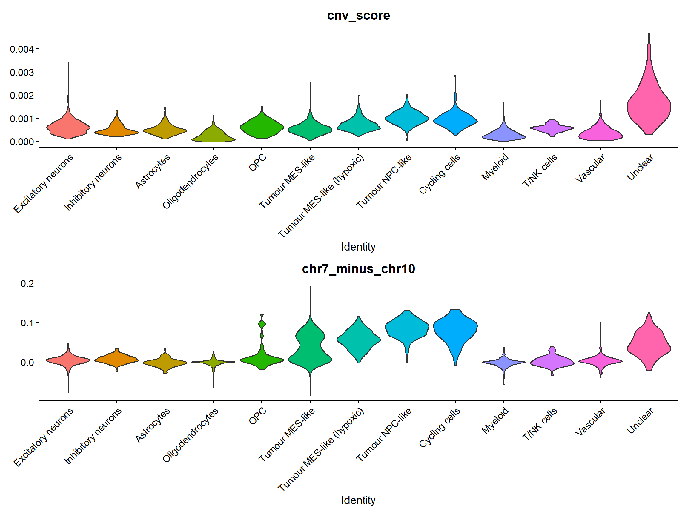
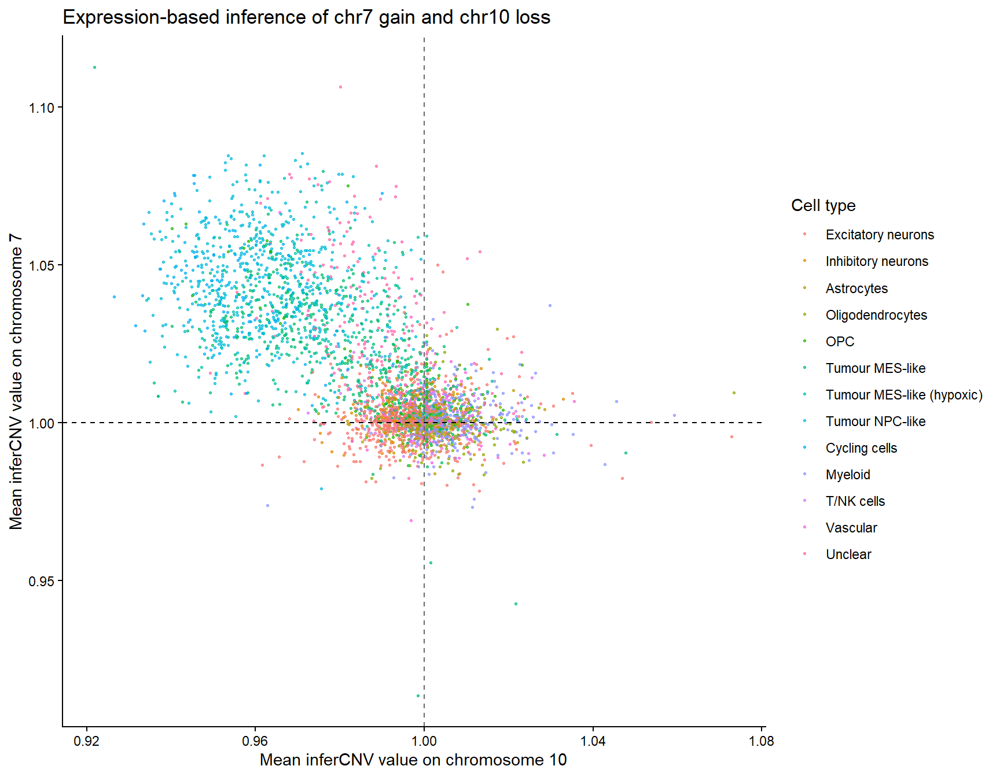
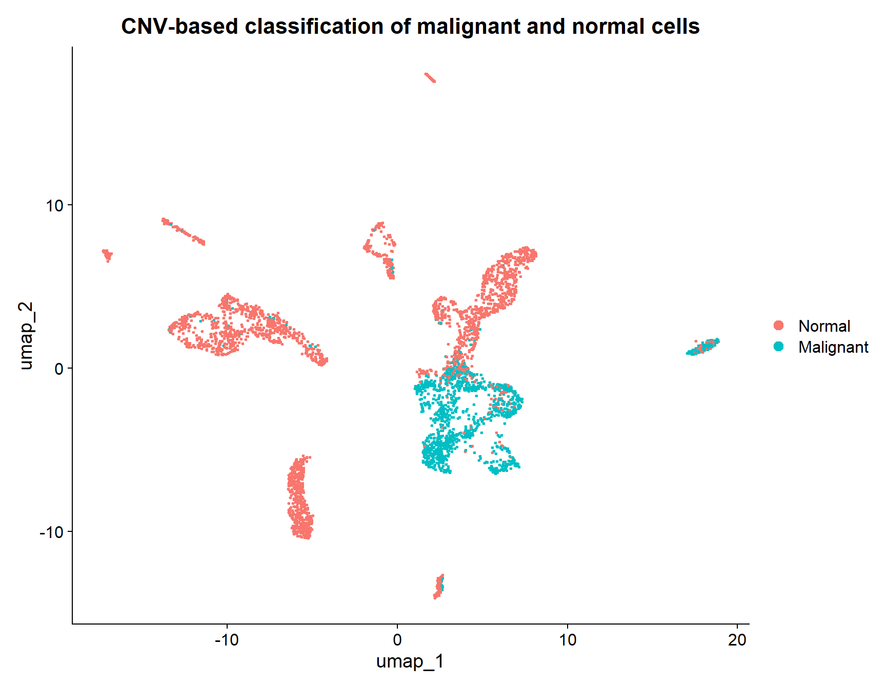
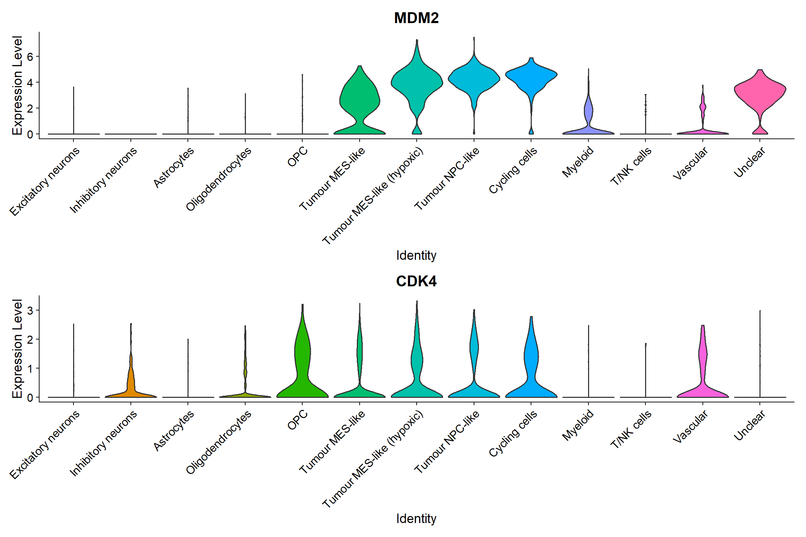

# Define a fixed random seed
the.seed <- 42
set.seed(the.seed)
Sys.setenv(JAGS_HOME="C:/Program Files/JAGS/JAGS-4.3.2")
# Load the packages required for CNV inference and visualisation
suppressPackageStartupMessages({
library(Seurat)
library(dplyr)
library(ggplot2)
library(infercnv)
})Glioblastoma_scRNAseq_CNV
Analyses Setup
inferCNV was used to estimate large-scale copy-number alterations from scRNA-seq expression profiles. The analysis was intended to support the distinction between malignant and non-malignant cells after transcriptome-based cell-type annotation.
A fixed random seed was used to improve reproducibility.
# Define the sample name used in input and output filenames
sample.name <- "brain_DV200"inferCNV requires the external JAGS software through the rjags package. The following commands are installation instructions only and are not executed during the analysis.
Installation (run once) : on Windows, install JAGS first (https://sourceforge.net/projects/mcmc-jags/), then :
# Run these commands only once when setting up the environment
if(!requireNamespace("BiocManager", quietly = TRUE)) {installed.packages("BiocManager")}
install.packages("rjags")
BiocManager::install("infercnv")Biological rationale
Transcriptomic annotation alone cannot establish whether a cell is malignant. Glioblastoma cells can express astrocytic, neuronal, oligodendrocyte-progenitor or mesenchymal transcriptional programmes that resemble normal brain populations.
inferCNV searches for coordinated expression changes across chromosomal regions. A chromosomal gain tends to increase the expression of multiple neighbouring genes, whereas a deletion tends to reduce their expression. In glioblastoma, chromosome 7 gain and chromosome 10 loss are frequent large-scale alterations.
However, inferCNV does not directly measure DNA. Its results should therefore be interpreted as expression-based evidence of copy-number alteration rather than definitive genomic confirmation.
Loading the annotated dataset
The Seurat object generated by the clustering and cell-type annotation analysis was loaded. The cell-type labels were inspected before selecting the reference populations.
# Define the path of the annotated Seurat object
annotated_file <- paste0('../data/processed_data/', sample.name, '_ANNOTATED.rda')
# Verify that the annotated object exists
stopifnot(file.exists(annotated_file))
# Load the annotated Seurat object
load(annotated_file)
# Verify that the expected object and metadata are present
stopifnot(exists("sobjFiltrd"))
stopifnot(inherits(sobjFiltrd, "Seurat"))
stopifnot("celltype" %in% colnames(sobjFiltrd@meta.data))
# Inspect the number of cells assigned to each population
table(sobjFiltrd$celltype)
Excitatory neurons Inhibitory neurons Astrocytes
709 153 88
Oligodendrocytes OPC Tumour MES-like
442 92 600
Tumour MES-like (hypoxic) Tumour NPC-like Cycling cells
220 535 128
Myeloid T/NK cells Vascular
553 48 174
Unclear
170 Selection of reference populations
inferCNV estimates a normal expression baseline from populations considered non-malignant. Immune and vascular populations are appropriate references because they are part of the tumour microenvironment but are not derived from the glioblastoma clone.
Oligodendrocytes were also included because their canonical markers and GBmap classification supported a non-neoplastic identity.
# Define the cell populations used to estimate the normal CNV baseline
ref_groups <- c("Oligodendrocytes", "Myeloid", "T/NK cells", "Vascular")
# Check that every reference population is present
stopifnot(all(ref_groups %in% unique(as.character(sobjFiltrd$celltype))))
# Display the number of cells in each reference population
annotations <- data.frame(
row.names = colnames(sobjFiltrd),
celltype = as.character(sobjFiltrd$celltype))The remaining populations were treated as observations. Neurons, astrocytes and OPCs were not assumed to be malignant; their inferred profiles served as additional biological checks.
Preparation of the inferCNV annotation table
inferCNV requires a two-column correspondence between cell barcodes and their group labels. The cell-type annotations were used to group cells in the heatmap.
# Build the cell-annotation table required by inferCNV
annotations <- data.frame(row.names = colnames(sobjFiltrd),
celltype = as.character(sobjFiltrd$celltype))
# Verify that every Seurat cell has one annotation
stopifnot(identical(rownames(annotations),colnames(sobjFiltrd)))
head(annotations) celltype
AAACAAGCACAATGGCAGTAGGCT-1 Oligodendrocytes
AAACAAGCATGGCTTTAGTAGGCT-1 Cycling cells
AAACAAGCATTTGCTAAGTAGGCT-1 OPC
AAACCAATCATCCAGCAGTAGGCT-1 Cycling cells
AAACCAATCTGCAACCAGTAGGCT-1 Unclear
AAACCAATCTTTGGTGAGTAGGCT-1 OligodendrocytesGene-order information
inferCNV requires the genomic position of each gene to order expression values along the chromosomes. The gene-order file corresponds to the hg38 genome assembly and GENCODE v27 annotations.
Gene positions on the chromosomes (hg38, from the Trinity CTAT / inferCNV resources) : https://data.broadinstitute.org/Trinity/CTAT/cnv/hg38_gencode_v27.txt
# Define the path of the hg38 gene-order file
gene_order_file <- "../data/reference/hg38_gencode_v27.txt"Chromosomes Y and mitochondrial DNA were excluded because their expression can vary independently of tumour-associated copy-number alterations. Chromosome X was retained in the present analysis, but its signal was interpreted cautiously because sex-linked and cell-type-specific expression may produce apparent alterations.
Creation of the inferCNV object
The unnormalised RNA count matrix was used, as required by inferCNV. The reference groups were supplied to estimate the non-malignant baseline.
# Extract the raw RNA counts from the Seurat object
raw_counts <- GetAssayData(
sobjFiltrd,
assay = "RNA",
layer = "counts"
)
# Create the inferCNV input object
infercnv_obj <- CreateInfercnvObject(
raw_counts_matrix = raw_counts,
annotations_file = annotations,
delim = "\t",
gene_order_file = gene_order_file,
ref_group_names = ref_groups,
chr_exclude = c("chrM", "chrY")
)INFO [2026-11-17 09:36:20] Parsing gene order file: ../data/reference/hg38_gencode_v27.txtINFO [2026-11-17 09:36:20] ::order_reduce:Start.INFO [2026-11-17 09:36:20] .order_reduce(): expr and order match.INFO [2026-11-17 09:36:21] ::process_data:order_reduce:Reduction from positional data, new dimensions (r,c) = 18985,3912 Total=20326458 Min=0 Max=7570.INFO [2026-11-17 09:36:21] num genes removed taking into account provided gene ordering list: 946 = 4.98288122201738% removed.INFO [2026-11-17 09:36:21] -filtering out cells < 100 or > Inf, removing 0 % of cellsWARN [2026-11-17 09:36:21] Please use "options(scipen = 100)" before running infercnv if you are using the analysis_mode="subclusters" option or you may encounter an error while the hclust is being generated.INFO [2026-11-17 09:36:22] validating infercnv_objRunning inferCNV
A cutoff of 0.1 was used because the dataset was generated with a 10x Genomics single-cell protocol. Expression values below this average-expression threshold contribute little reliable information to the CNV profile.
Denoising was enabled to reduce residual expression noise. The Hidden Markov Model was disabled because the objective was to obtain smoothed chromosomal expression profiles and a per-cell score rather than formal region-by-region CNV calls.
We don’t use the HMM (CNV calling per region), we only need the smoothed expression to score each cell. save_rds = FALSE avoids saving an object at each step (~2.5 GB), only the final object is kept.
# Define the inferCNV output directory
infercnv_output_dir <- "../data/infercnv_out"
# Run the inferCNV workflow
infercnv_obj <- infercnv::run(
infercnv_obj,
cutoff = 0.1,
out_dir = infercnv_output_dir,
cluster_by_groups = TRUE,
denoise = TRUE,
HMM = FALSE,
save_rds = FALSE,
num_threads = 4)INFO [2026-11-17 09:36:22] ::process_data:StartINFO [2026-11-17 09:36:22] Checking for saved results.INFO [2026-11-17 09:36:22]
STEP 1: incoming dataINFO [2026-11-17 09:36:22]
STEP 02: Removing lowly expressed genesINFO [2026-11-17 09:36:22] ::above_min_mean_expr_cutoff:StartINFO [2026-11-17 09:36:22] Removing 7736 genes from matrix as below mean expr threshold: 0.1INFO [2026-11-17 09:36:22] validating infercnv_objINFO [2026-11-17 09:36:22] There are 10303 genes and 3912 cells remaining in the expr matrix.INFO [2026-11-17 09:36:25] no genes removed due to min cells/gene filterINFO [2026-11-17 09:36:25]
STEP 03: normalization by sequencing depthINFO [2026-11-17 09:36:25] normalizing counts matrix by depthINFO [2026-11-17 09:36:27] Computed total sum normalization factor as median libsize: 2536.500000INFO [2026-11-17 09:36:27]
STEP 04: log transformation of dataINFO [2026-11-17 09:36:27] transforming log2xplus1()INFO [2026-11-17 09:36:30]
STEP 08: removing average of reference data (before smoothing)INFO [2026-11-17 09:36:30] ::subtract_ref_expr_from_obs:Start inv_log=FALSE, use_bounds=TRUEINFO [2026-11-17 09:36:30] subtracting mean(normal) per gene per cell across all dataINFO [2026-11-17 09:36:33] -subtracting expr per gene, use_bounds=TRUEINFO [2026-11-17 09:36:37]
STEP 09: apply max centered expression threshold: 3INFO [2026-11-17 09:36:37] ::process_data:setting max centered expr, threshold set to: +/-: 3INFO [2026-11-17 09:36:39]
STEP 10: Smoothing data per cell by chromosomeINFO [2026-11-17 09:36:39] smooth_by_chromosome: chr: chr1INFO [2026-11-17 09:36:42] smooth_by_chromosome: chr: chr2INFO [2026-11-17 09:36:46] smooth_by_chromosome: chr: chr3INFO [2026-11-17 09:36:49] smooth_by_chromosome: chr: chr4INFO [2026-11-17 09:36:52] smooth_by_chromosome: chr: chr5INFO [2026-11-17 09:36:55] smooth_by_chromosome: chr: chr6INFO [2026-11-17 09:36:59] smooth_by_chromosome: chr: chr7INFO [2026-11-17 09:37:02] smooth_by_chromosome: chr: chr8INFO [2026-11-17 09:37:06] smooth_by_chromosome: chr: chr9INFO [2026-11-17 09:37:09] smooth_by_chromosome: chr: chr10INFO [2026-11-17 09:37:12] smooth_by_chromosome: chr: chr11INFO [2026-11-17 09:37:16] smooth_by_chromosome: chr: chr12INFO [2026-11-17 09:37:20] smooth_by_chromosome: chr: chr13INFO [2026-11-17 09:37:23] smooth_by_chromosome: chr: chr14INFO [2026-11-17 09:37:26] smooth_by_chromosome: chr: chr15INFO [2026-11-17 09:37:29] smooth_by_chromosome: chr: chr16INFO [2026-11-17 09:37:32] smooth_by_chromosome: chr: chr17INFO [2026-11-17 09:37:36] smooth_by_chromosome: chr: chr18INFO [2026-11-17 09:37:38] smooth_by_chromosome: chr: chr19INFO [2026-11-17 09:37:42] smooth_by_chromosome: chr: chr20INFO [2026-11-17 09:37:45] smooth_by_chromosome: chr: chr21INFO [2026-11-17 09:37:48] smooth_by_chromosome: chr: chr22INFO [2026-11-17 09:37:51] smooth_by_chromosome: chr: chrXINFO [2026-11-17 09:37:54]
STEP 11: re-centering data across chromosome after smoothingINFO [2026-11-17 09:37:54] ::center_smooth across chromosomes per cellINFO [2026-11-17 09:38:00]
STEP 12: removing average of reference data (after smoothing)INFO [2026-11-17 09:38:00] ::subtract_ref_expr_from_obs:Start inv_log=FALSE, use_bounds=TRUEINFO [2026-11-17 09:38:00] subtracting mean(normal) per gene per cell across all dataINFO [2026-11-17 09:38:04] -subtracting expr per gene, use_bounds=TRUEINFO [2026-11-17 09:38:08]
STEP 14: invert log2(FC) to FCINFO [2026-11-17 09:38:08] invert_log2(), computing 2^xINFO [2026-11-17 09:38:12]
STEP 15: computing tumor subclusters via leidenINFO [2026-11-17 09:38:12] define_signif_tumor_subclusters(p_val=0.1INFO [2026-11-17 09:38:13] define_signif_tumor_subclusters(), tumor: AstrocytesINFO [2026-11-17 09:38:13] Setting auto leiden resolution for Astrocytes to 0.180564Warning: Data is of class matrix. Coercing to dgCMatrix.Finding variable features for layer countsCentering and scaling data matrixPC_ 1
Positive: DAPK3, ATCAY, ZFR2, MATK, PIP5K1C, MFSD12, FZR1, DOHH, NFIC, CACTIN
CELF5, HMG20B, NCLN, GNA15, TNIP1, HAVCR2, GPX3, MED7, SSR4, PDZD4
L1CAM, IDH3G, ARHGAP4, ABCD1, SMIM3, CYFIP2, BCAP31, SLC6A8, FNDC9, RAB35
Negative: EXOC6, MYOF, MARCH5, RBP4, CPEB3, BTAF1, FRA10AC1, TNKS2, LGI1, PPP1R3C
HECTD2, PCGF5, TBC1D12, RPP30, IFIT5, HELLS, IFIT1, IFIT2, SORBS1, LIPA
ALDH18A1, CH25H, FAS, TCTN3, ACTA2, STAMBPL1, ENTPD1, PTEN, ACOT11, SSBP3
PC_ 2
Positive: TSTA3, ZNF623, TIGD5, NAPRT, ZNF707, GSDMD, ZC3H3, SCRIB, RHPN1, PUF60
NRBP2, TOP1MT, PLEC, ZNF696, GLI4, ZFP41, GPIHBP1, LY6H, LY6E, LYNX1
THEM6, TELO2, CLCN7, MAPK8IP3, NME3, JPT2, IFT140, EME2, CRAMP1, C16orf91
Negative: SNRNP27, ANXA4, AAK1, MXD1, NFU1, ASPRV1, PCBP1, GFPT1, TIA1, PCYOX1
ANTXR1, SNRPG, FAM136A, PLEK, ADD2, CNRIP1, PPP3R1, WDR92, ETAA1, DUT
MYEF2, SEMA6D, COPS2, SECISBP2L, EID1, FBN1, BLOC1S6, GALK2, SLC30A4, DTWD1
PC_ 3
Positive: WIF1, LEMD3, TBC1D30, TMBIM4, GNS, TBK1, IRAK3, XPOT, SRGAP1, CAND1
PPM1H, MON2, USP15, DYRK2, SLC16A7, CTDSP2, IL26, AVIL, TSFM, IL22
EEF1AKMT3, MDM1, MARCH9, CDK4, NUP107, TSPAN31, SLC35E3, AGAP2, MDM2, CPM
Negative: VPS29, PPTC7, TCTN1, PPP1CC, CUX2, SH2B3, ATXN2, BRAP, ACAD10, ALDH2
MAPKAPK5, TMEM116, NAA25, TRAFD1, HECTD4, PTPN11, RPH3A, OAS1, OAS3, DTX1
RASAL1, DDX54, RITA1, TPCN1, JAKMIP2, CBX3, CYCS, HNRNPA2B1, FBXO38, ADRB2
PC_ 4
Positive: TM9SF2, DOCK9, PCCA, UBAC2, STK24, FARP1, GPR183, IPO5, TMTC4, RAP2A
NALCN, FGF14, MBNL2, TPP2, HS6ST3, BIVM, ERCC5, UGGT2, DNAJC3, EFNB2
DZIP1, ARGLU1, CLDN10, FAM155A, ABCC4, LIG4, SOX21, GPR180, ABHD13, SLITRK5
Negative: DHTKD1, UPF2, USP6NL, SEC61A2, CELF2, GDI2, ASB13, SFMBT2, ANKRD16, PFKFB3
RBM17, BTRC, SFXN3, DPCD, PDZD7, LZTS2, SLF2, HIF1AN, POLL, NDUFB8
HPS6, KCNIP2, LDB1, SEC31B, FBXW4, PPRC1, SCD, NOLC1, GBF1, BLOC1S2
PC_ 5
Positive: IL32, ZNF205, THOC6, HCFC1R1, ZNF213, TNFRSF12A, PAQR4, FLYWCH2, ELOB, SRRM2
KCTD5, PDPK1, NAA60, AMDHD2, CLUAP1, MAST1, PRDX2, DNASE2, JUNB, ATP6V0C
HOOK2, GCDH, SLX4, TRIR, FARSA, TNPO2, DNASE1, CALR, DHPS, WDR83OS
Negative: PHACTR3, FAM217B, CTSZ, NELFCD, NPEPL1, TAF4, LSM14B, STX16, VAPB, PSMA7
RAB22A, SS18L1, PMEPA1, MTG2, RAE1, BMP7, HRH3, CSTF1, CBLN4, OSBPL2
DOK5, ADRM1, ZNF217, LAMA5, TSHZ2, CABLES2, ZFP64, ATP9A, MRGBP, NFATC2 Computing nearest neighbor graphComputing SNNINFO [2026-11-17 09:38:14] define_signif_tumor_subclusters(), tumor: Cycling cellsINFO [2026-11-17 09:38:14] Setting auto leiden resolution for Cycling cells to 0.130903Warning: Data is of class matrix. Coercing to dgCMatrix.Finding variable features for layer countsCentering and scaling data matrixPC_ 1
Positive: CPLX1, GAK, TMEM175, DGKQ, IDUA, FGFRL1, SPON2, MAEA, MLH1, UVSSA
LRRFIP2, RBM33, LMBR1, ITGA9, NOM1, NCAPG2, UBE3C, INSIG1, PTPRN2, DNAJB6
ESYT2, WDR60, CTDSPL, PAXIP1, PCDHB4, DPP6, PCDHB5, PCDHB3, PLCD1, PCDHB7
Negative: MS4A7, CCDC86, MS4A4A, PRPF19, MS4A4E, TMEM109, MS4A6A, TMEM132A, STX3, PATL1
SLC15A3, OSBP, DDB1, MPEG1, DTX4, TKFC, FAM111A, CYB561A3, ZFP91, LPXN
CTNND1, SELENOH, TMEM138, TMX2, ZDHHC5, CPSF7, YPEL4, SERPING1, SDHAF2, SYT7
PC_ 2
Positive: TMEM173, DNAJC18, UBE2D2, PAIP2, CXXC5, SIL1, PSD2, LRRTM2, PURA, CTNNA1
IGIP, CYSTM1, HSPA9, PFDN1, ETF1, HBEGF, EGR1, ANKHD1, SRA1, REEP2
APBB3, SLC35A4, KDM3B, CD14, NDUFA2, FAM53C, IK, WDR55, CDC23, HARS
Negative: SOX4, NRSN1, CDKAL1, MRS2, E2F3, GPLD1, ALDH5A1, KIAA0319, MBOAT1, TDP2
ACOT13, C6orf62, GMNN, ID4, RIPOR2, CARMIL1, RNF144B, TRIM38, HIST1H1C, DEK
HIST1H4C, HIST1H1E, KDM1B, HIST1H1D, BTN3A2, BTN3A1, BTN3A3, BTN2A1, KIF13A, HMGN4
PC_ 3
Positive: TPCN1, RITA1, SLC8B1, DDX54, PLBD2, RASAL1, DTX1, SDS, OAS3, OAS1
SLC39A11, SSTR2, COG1, RPH3A, C17orf80, CDC42EP4, RBM19, PTPN11, TTYH2, HECTD4
MED13L, CD300A, TRAFD1, SLC9A3R1, RNFT2, NAA25, NAT9, HRK, TMEM116, TMEM104
Negative: DTWD1, GALK2, COPS2, USP8, TRPM7, SECISBP2L, EID1, FBN1, SPPL2A, DUT
ATAD2B, LDAH, AP4E1, PUM2, LAPTM4A, RDH14, RHOB, WDR35, UBXN2A, MYEF2
GEN1, TNFAIP8L3, FKBP1B, SEMA6D, SMC6, GLDN, SF3B6, BLOC1S6, DMXL2, FAM228B
PC_ 4
Positive: ARRB1, SLCO2B1, SERPINH1, MAP6, SPCS2, RNF169, UVRAG, THAP12, POLD3, PGM2L1
EMSY, TSHZ1, MBP, ZNF236, ZNF516, SALL3, ZADH2, ATP9B, PPME1, ACER3
CAPN5, PAK1, ZNF407, CTDP1, SRD5A3, CLNS1A, C2CD3, RSF1, TMEM165, TXNL4A
Negative: KATNB1, KIFC3, ADGRG1, USB1, DOK4, CFAP20, CSNK2A2, POLR2C, COQ9, CCDC113
CIAPIN1, NDRG4, CX3CL1, SETD6, PLLP, CNOT1, ARL2BP, SLC38A7, RSPRY1, FAM192A
CPNE2, NLRC5, HERPUD1, NUP93, MT1X, CMTM3, MT1E, MT2A, CMTM4, MT3
PC_ 5
Positive: FKBP3, MIS18BP1, PRPF39, TOGARAM1, MDGA2, KLHL28, MGAT2, KLHDC1, LRFN5, KLHDC2
FBXO33, NEMF, PNN, ARF6, VCPKMT, TRAPPC6B, SOS2, L2HGDH, SEC23A, CDKL1
CLEC14A, MAP4K5, SSTR1, ATL1, MBIP, SAV1, BRMS1L, NIN, RALGAPA1, NFKBIA
Negative: SYAP1, CTPS2, AP1S2, PIR, CNKSR2, TM6SF1, HDGFL3, MOSPD2, BTBD1, SH3GL3
MBTPS2, ZSCAN2, C15orf40, GPM6B, PCYT1B, POLA1, SMS, WDR73, ARX, HOMER2
PDK3, PTCHD1, NMB, ZFX, PRDX4, TAB3, SEC11A, WHAMM, EIF2S3, ACOT9 Computing nearest neighbor graphComputing SNNINFO [2026-11-17 09:38:15] define_signif_tumor_subclusters(), tumor: Excitatory neuronsINFO [2026-11-17 09:38:15] Setting auto leiden resolution for Excitatory neurons to 0.0301167Warning: Data is of class matrix. Coercing to dgCMatrix.Finding variable features for layer countsCentering and scaling data matrixPC_ 1
Positive: TOMM7, FAM126A, KLHL7, GPNMB, RAPGEF5, MALSU1, CBX3, SNX10, IGF2BP3, HNRNPA2B1
FAM221A, SKAP2, CYCS, TRA2A, NPY, HOXA9, CDCA7L, MPP6, OSBPL3, HIBADH
TAX1BP1, SP4, JAZF1, CREB5, ITGB8, TRIL, TWISTNB, CPVL, HDAC9, WIPF3
Negative: PLEC, NUBP2, NRBP2, SPSB3, PUF60, EME2, SCRIB, ZNF707, ZNF623, NME3
TSTA3, TIGD5, NAPRT, GSDMD, MAPK8IP3, ZC3H3, RHPN1, JPT2, TOP1MT, CRAMP1
ZNF696, IFT140, GLI4, ZFP41, TELO2, GPIHBP1, CLCN7, LY6H, C16orf91, LY6E
PC_ 2
Positive: FBXL16, WDR24, JMJD8, STUB1, RHBDL1, METRN, RHOT2, WDR90, METTL26, HAGHL
RAB40C, PIGQ, CAPN15, RPUSD1, RAB11FIP3, CHTF18, NME4, TMEM8A, LMF1, AXIN1
SOX8, PDIA2, ARHGDIG, CACNA1H, RGS11, FAM234A, LUC7L, UBE2I, HBA1, BAIAP3
Negative: PPP1R12A, ACSS3, TMTC2, CCDC59, PPFIA2, LIN7A, PAWR, SYT1, SLC6A15, C12orf29
CEP290, NAV3, TMTC3, ZDHHC17, DUSP6, OSBPL8, ATP2B1, BBS10, DCN, BTG1
PHLDA1, EEA1, KRR1, NUDT4, GLIPR1, UBE2N, CRADD, KCNC2, PLXNC1, ATXN7L3B
PC_ 3
Positive: CTNNBL1, VSTM2L, NNAT, TTI1, BLCAP, RPRD1B, TGM2, SRC, KIAA1755, RALGAPB
MANBAL, SLC32A1, RPN2, ACTR5, SAMHD1, PPP1R16B, SOGA1, DHX35, DSN1, MAFB
RTN3, C11orf95, MARK2, NAA40, ATL3, NDRG3, COX8A, CHRM1, OTUB1, SLC3A2
Negative: SLC35A1, SMIM8, RARS2, ZNF292, ORC3, SNX14, CEP162, AKIRIN2, CNR1, RNGTT
MRAP2, PNRC1, SRSF12, CYB5R4, PM20D2, UBE2J1, SNAP91, RRAGD, ANKRD6, ME1
MDN1, CASP8AP2, RWDD2A, MAP3K7, PGM3, EPHA7, IBTK, MANEA, BCKDHB, FUT9
PC_ 4
Positive: PELP1, ANKFY1, MYBBP1A, UBE2G1, CYB5D2, ARRB2, SPNS2, NCBP3, ZZEF1, EMC6
CAMKK1, TAX1BP3, MED11, CTNS, SHPK, CXCL16, TRPV1, PSMB6, ASPA, RAP1GAP2
PLD2, CLUH, PAFAH1B1, MINK1, METTL16, SLC25A11, SGSM2, RNF167, TSR1, PFN1
Negative: EPHB4, POP7, GIGYF1, ACTL6B, GNB2, SLC12A9, TRIP6, SRRT, ACHE, TRIM56
MCM7, SERPINE1, AP1S1, COPS6, VGF, ZNF3, PLOD3, ZSCAN21, ZNHIT1, ZKSCAN1
CLDN15, TRIM4, FIS1, IFT22, ZSCAN25, COL26A1, CUX1, ZNF655, SH2B2, ZKSCAN5
PC_ 5
Positive: C1GALT1, ZNF12, ZNF316, MIOS, ZNF853, UMAD1, C7orf26, GLCCI1, ZDHHC4, ICA1
KDELR2, NXPH1, DAGLB, RAC1, NDUFA4, CYTH3, PHF14, USP42, THSD7A, EIF2AK1
TMEM106B, SCIN, ARL4A, AIMP2, ETV1, DGKB, ANKMY2, PMS2, BZW2, TSPAN13
Negative: PDIA3, SERF2, CKMT1A, MFAP1, CATSPER2, WDR76, FRMD5, CKMT1B, CASC4, PPIP5K1
CTDSPL2, MAP1A, TP53BP1, EIF3J, TUBGCP4, SPG11, ZSCAN29, B2M, CCNDBP1, SHF
TMEM62, GATM, TTBK2, SPATA5L1, SLC30A4, CDAN1, BLOC1S6, STARD9, SEMA6D, HAUS2 Computing nearest neighbor graphComputing SNNINFO [2026-11-17 09:38:18] define_signif_tumor_subclusters(), tumor: Inhibitory neuronsINFO [2026-11-17 09:38:18] Setting auto leiden resolution for Inhibitory neurons to 0.112316Warning: Data is of class matrix. Coercing to dgCMatrix.Finding variable features for layer countsCentering and scaling data matrixPC_ 1
Positive: AKIRIN2, CNR1, ORC3, RARS2, SLC35A1, SMIM8, RNGTT, ZNF292, PNRC1, SNX14
SRSF12, PM20D2, CEP162, UBE2J1, RRAGD, MRAP2, ANKRD6, MDN1, CYB5R4, CASP8AP2
MAP3K7, SNAP91, EPHA7, MANEA, ME1, FUT9, UFL1, RWDD2A, NDUFAF4, KLHL32
Negative: NEFL, NEFM, ADAM28, DOCK5, SLC25A37, ENTPD4, KCTD9, LOXL2, PPP2R2A, R3HCC1
CHMP7, BNIP3L, PNMA2, TNFRSF10B, DPYSL2, RHOBTB2, ADRA1A, STMN4, EGR3, TRIM35
PTK2B, BIN3, CLU, CCAR2, SCARA3, CCDC25, PDLIM2, ELP3, SORBS3, PNOC
PC_ 2
Positive: TSTA3, ZNF623, TIGD5, ZNF707, NAPRT, SCRIB, PUF60, GSDMD, NRBP2, ZC3H3
PLEC, RHPN1, UBE2D2, TMEM173, CXXC5, TOP1MT, PFDN1, PSD2, HBEGF, CYSTM1
DNAJC18, ZNF696, ANKHD1, IGIP, GLI4, PURA, PAIP2, SRA1, ZFP41, GPIHBP1
Negative: DTNA, MAPRE2, NOL4, ZNF397, GAREM1, ZSCAN30, ZNF24, RNF138, INO80C, TRAPPC8
GALNT1, SLC39A6, RPRD1A, ELP2, B4GALT6, FHOD3, TPGS2, KIAA1328, CDH2, CELF4
PIK3C3, SYT4, SETBP1, AQP4, SLC14A1, KCTD1, EPG5, C18orf25, SS18, RNF165
PC_ 3
Positive: MBIP, SSTR1, BRMS1L, CLEC14A, RALGAPA1, SEC23A, TRAPPC6B, FBXO33, LRFN5, PNN
NFKBIA, KLHL28, TOGARAM1, PRPF39, FKBP3, PPP2R3C, MIS18BP1, MDGA2, FAM177A1, MGAT2
KLHDC1, SRP54, KLHDC2, BAZ1A, NEMF, CFL2, ARF6, SNX6, VCPKMT, EAPP
Negative: AFAP1, ABLIM2, SH3TC1, ACOX3, PTPRN, DNPEP, DNAJB2, SPEG, TUBA4A, GMPPA
ASIC4, STK16, CHPF, ANKZF1, TMEM198, OBSL1, STK11IP, MYL6B, MYL6, SLC4A3
ESYT1, SMARCC2, NABP2, ZC3H10, COQ10A, CNPY2, ANKRD52, RNF41, PAN2, STAT2
PC_ 4
Positive: SH2B2, ORAI2, CUX1, COL26A1, ALKBH4, IFT22, LRWD1, CLDN15, FIS1, ZNHIT1
PLOD3, VGF, POLR2J3, AP1S1, SERPINE1, RASA4, TRIM56, UPK3BL1, POLR2J2, ACHE
FAM185A, SRRT, ARMC10, TRIP6, NAPEPLD, SLC12A9, EPHB4, POP7, PMPCB, GIGYF1
Negative: HEATR1, LGALS8, ERO1B, GPR137B, ACTN2, NID1, TBCE, B3GALNT2, ARID4B, GGPS1
TOMM20, LYST, GNG4, IRF2BP2, MTR, TARBP1, RYR2, CHRM3, FMN2, COA6
SLC35F3, RGS7, DNAJA1, APTX, NDUFB6, SMU1, TOPORS, B4GALT1, DDX58, BAG1
PC_ 5
Positive: TTYH3, MMD2, SLC29A4, TNRC18, RBAK, IQCE, WIPI2, AP5Z1, SDK1, FBXL18
AIMP2, PMS2, BRAT1, EIF2AK1, FOXK1, ACTB, RNF216, FSCN1, USP42, LFNG
CHST12, CYTH3, EIF3B, SNX8, RAC1, NUDT1, MRM2, MAD1L1, PSMG3, DAGLB
Negative: NUP54, SCARB2, NAAA, FAM47E, USO1, CCNI, CCNG2, G3BP2, CDKL2, THAP6
CNOT6L, RCHY1, PARM1, BMP2K, MTHFD2L, PAQR3, CXCL2, PRDM8, RASGEF1B, HNRNPD
HNRNPDL, ENOPH1, SCD5, SEC31A, COPS4, COQ2, HELQ, CDS1, WDFY3, ARHGAP24 Computing nearest neighbor graphComputing SNNINFO [2026-11-17 09:38:19] define_signif_tumor_subclusters(), tumor: OPCINFO [2026-11-17 09:38:19] Setting auto leiden resolution for OPC to 0.173804Warning: Data is of class matrix. Coercing to dgCMatrix.Finding variable features for layer countsCentering and scaling data matrixPC_ 1
Positive: PCBD1, UNC5B, VSIR, PSAP, CHST3, SPOCK2, ASCC1, ANAPC16, TIAL1, BAG3
INPP5F, RGS10, MCMBP, GRK5, SEC23IP, EIF3A, DDIT4, CACUL1, WDR11, FAM204A
FGFR2, RAB11FIP2, PDZD8, ATE1, SHTN1, DNAJB12, HSPA12A, NSMCE4A, ATRNL1, RUFY2
Negative: DAGLB, KDELR2, C7orf26, ZDHHC4, ZNF853, RAC1, ZNF316, CYTH3, ZNF12, USP42
C1GALT1, MIOS, EIF2AK1, UMAD1, AIMP2, GLCCI1, PMS2, ICA1, RNF216, NXPH1
FSCN1, NDUFA4, ACTB, FBXL18, PHF14, TNRC18, SLC29A4, THSD7A, WIPI2, TMEM106B
PC_ 2
Positive: GFAP, C1QL1, DCAKD, NMT1, PLCD3, ACBD4, EFTUD2, HEXIM1, FMNL1, GJC1
MAP3K14, MXRA7, CYGB, ADAM11, JMJD6, SEC14L1, TNRC6C, ARHGAP27, RHBDF2, MGAT5B
TMC6, UBE2O, METTL23, MFSD11, SPHK1, TMC8, SRSF2, DBF4B, CRHR1, PRPSAP1
Negative: MBNL2, FARP1, HS6ST3, RAP2A, STK24, IPO5, DOCK9, UGGT2, UBAC2, DNAJC3
GPR183, DZIP1, CLDN10, TM9SF2, ABCC4, SOX21, GPR180, PCCA, SLITRK5, TMTC4
SLITRK1, SPRY2, NALCN, NDFIP2, FGF14, RBM26, TPP2, EDNRB, BIVM, SLAIN1
PC_ 3
Positive: NBEAL1, CYP20A1, CARF, ABI2, RAPH1, WDR12, EEF1B2, ZDBF2, NRP2, ICA1L
INO80D, ADAM23, NDUFS1, FASTKD2, FAM117B, KLF7, BMPR2, NOP58, CREB1, ALS2
TMEM237, TRAK2, METTL21A, CFLAR, NDUFB3, CCNYL1, FZD5, FAM126B, PLEKHM3, ORC2
Negative: SLC4A7, NEK10, AZI2, NGLY1, TOP2B, RBMS3, TGFBR2, THRB, STT3B, NR1D2
OSBPL10, NKIRAS1, GPD1L, UBE2E1, UBE2E2, CMTM6, ZNF385D, DYNC1LI1, KAT2B, RAB5A
CNOT10, SATB1, TBC1D5, PLCL2, GLB1, RFTN1, OXNAD1, DPH3, TMPPE, GALNT15
PC_ 4
Positive: FAAP20, SKI, RER1, PEX10, PLCH2, PANK4, HES5, TNFRSF14, TPRG1L, WRAP73
LRRC47, CEP104, DFFB, C1orf174, AJAP1, NPHP4, KCNAB2, CHD5, ICMT, ACOT7
TNFRSF25, PLEKHG5, NOL9, ZBTB48, KLHL21, PHF13, THAP3, DNAJC11, CCNL2, CAMTA1
Negative: MBD1, CXXC1, ACAA2, MAPK4, C18orf32, MRO, DYM, ME2, SMAD7, CTIF
ELAC1, SMAD2, IER3IP1, SMAD4, RNF165, ST8SIA5, HDHD2, C18orf25, PIAS2, EPG5
MEX3C, SLC14A1, SETBP1, MBD2, POLI, SYT4, PIK3C3, CELF4, KIAA1328, IPCEF1
PC_ 5
Positive: ZNF821, IST1, DHX38, ATXN1L, ZFHX3, AP1G1, PSMD7, PHLPP2, GLG1, CFDP1
ZNF23, FA2H, BCAR1, ZFP1, WDR59, CALB2, LDHD, ZNRF1, CMTR2, VAC14
IL34, SF3B3, COG4, ST3GAL2, DDX19A, DDX19B, AARS, EXOSC6, CMC2, PDPR
Negative: DIS3L, MEGF11, MAP2K1, RAB11A, SNAPC5, INTS14, DENND4A, HACD3, DPP8, IGDCC4
SMAD3, CLPX, AAGAB, C15orf61, PDCD7, MAP2K5, UBAP1L, SPG21, PIAS1, ANKDD1A
CLN6, PLEKHO2, FEM1B, OAZ2, CORO2B, ZNF609, ANP32A, TRIP4, CSNK1G1, PPIB Computing nearest neighbor graphComputing SNNINFO [2026-11-17 09:38:20] define_signif_tumor_subclusters(), tumor: Tumour MES-likeINFO [2026-11-17 09:38:20] Setting auto leiden resolution for Tumour MES-like to 0.0347564Warning: Data is of class matrix. Coercing to dgCMatrix.Finding variable features for layer countsCentering and scaling data matrixPC_ 1
Positive: SH3PXD2A, NEURL1, CALHM2, STN1, SLK, GSTO1, SORCS3, PDCD11, SORCS1, INA
XPNPEP1, ADD3, NT5C2, MXI1, CNNM2, SMNDC1, BORCS7, WBP1L, SMC3, ARL3
TRIM8, SUFU, ACTR1A, MFSD13A, CUEDC2, FBXL15, PSD, NFKB2, GBF1, NOLC1
Negative: SLC35E3, MDM2, NUP107, CPM, MDM1, CPSF6, IL22, LYZ, IL26, YEATS4
DYRK2, FRS2, CCT2, CAND1, BEST3, IRAK3, RAB3IP, TMBIM4, CNOT2, LEMD3
KCNMB4, WIF1, PTPRB, TBC1D30, PTPRR, GNS, ZFC3H1, TBK1, TMEM19, XPOT
PC_ 2
Positive: CLVS2, NKAIN2, RNF217, FABP7, TPD52L1, SERINC1, HDDC2, HSF2, NCOA7, HINT3
GJA1, TRMT11, TBC1D32, RNF146, MAN1A1, ECHDC1, FAM184A, SOGA3, KIAA0408, CTBS
SSX2IP, C1orf52, BCL10, ASF1A, PTPRK, DDAH1, LAMA2, ZNHIT6, CEP85L, SH3GLB1
Negative: GCDH, FARSA, CALR, DNASE2, RAD23A, GADD45GIP1, MAST1, NFIX, PRDX2, JUNB
TRMT1, HOOK2, NACC1, DHPS, TRIR, WDR83, WDR83OS, TNPO2, STX10, MAN2B1
ZNF791, IER2, ZNF490, CCDC130, ZNF709, ZNF44, MRI1, ZNF625, C19orf53, CC2D1A
PC_ 3
Positive: UNK, UNC13D, WBP2, H3F3B, TRIM47, ITGB4, TRIM65, SAP30BP, FBF1, RECQL5
ACOX1, MYO15B, TEN1, TSEN54, CDK3, CASKIN2, SRP68, TMEM94, EXOC7, GRB2
RNF157, SLC25A19, MIF4GD, UBALD2, GGA3, PRPSAP1, NUP85, SPHK1, SUMO2, JPT1
Negative: KCNMB4, CNOT2, PTPRB, PTPRR, RAB3IP, ZFC3H1, BEST3, CCT2, TMEM19, FRS2
RAB21, YEATS4, TBC1D15, LYZ, TRHDE, CPSF6, ATXN7L3B, CPM, KCNC2, IL26
IL22, MDM1, NUP107, MDM2, DYRK2, CAND1, SLC35E3, GLIPR1, IRAK3, TMBIM4
PC_ 4
Positive: ETS2, PSMG1, KCNJ6, BRWD1, DYRK1A, HMGN1, TTC3, PCP4, PIGP, HLCS
DSCAM, MORC3, BACE2, MX1, CBR1, C2CD2, SETD4, ZBTB21, RUNX1, ABCG1
RCAN1, SLC37A1, SLC5A3, ITSN1, NDUFV3, CRYZL1, PKNOX1, DONSON, CBS, SON
Negative: TNIP2, SH3BP2, GRK4, HTT, NOP14, ADD1, MFSD10, FAM193A, RGS12, LRPAP1
TMEM128, RNF4, STX18, ZFYVE28, MSX1, EVC, MXD4, CRMP1, HAUS3, C4orf50
JAKMIP1, NAT8L, WFS1, C4orf48, NELFA, PPP2R2C, NSD2, MAN2B2, FGFR3, MRFAP1
PC_ 5
Positive: UBXN2A, ATAD2B, FKBP1B, LDAH, SF3B6, FAM228B, RHOB, TP53I3, PUM2, ITSN2
LAPTM4A, NCOA1, WDR35, PTRHD1, RDH14, ADCY3, GEN1, DNAJC27, SMC6, EFR3B
VSNL1, DNMT3A, FAM49A, DTNB, MYCN, ASXL2, DDX1, KIF3C, NBAS, RAB10
Negative: EVC, MSX1, STX18, CRMP1, C4orf50, TMEM128, JAKMIP1, LRPAP1, WFS1, PPP2R2C
RGS12, MAN2B2, HTT, GRK4, MRFAP1, NOP14, AC093323.1, MFSD10, MRFAP1L1, ADD1
BLOC1S4, SH3BP2, TNIP2, KIAA0232, FAM193A, TBC1D14, RNF4, TADA2B, ZFYVE28, GRPEL1 Computing nearest neighbor graphComputing SNNINFO [2026-11-17 09:38:22] define_signif_tumor_subclusters(), tumor: Tumour MES-like (hypoxic)INFO [2026-11-17 09:38:22] Setting auto leiden resolution for Tumour MES-like (hypoxic) to 0.0822339Warning: Data is of class matrix. Coercing to dgCMatrix.Finding variable features for layer countsCentering and scaling data matrixPC_ 1
Positive: EEF1G, AHNAK, TUT1, ASRGL1, INCENP, MTA2, FTH1, ROM1, B3GAT3, GANAB
UQCC3, UBXN1, BSCL2, GNG3, HNRNPUL2, CDS1, HELQ, WDFY3, COQ2, ARHGAP24
COPS4, MAPK10, SEC31A, TTC9C, SCD5, PTPN13, ENOPH1, AFF1, HNRNPDL, POLR2G
Negative: ALDH3A2, SLC47A2, ULK2, AKAP10, SPECC1, USP22, TMEM11, MAP2K3, WSB1, KSR1
LGALS9, LYRM9, NLK, TMEM97, IFT20, TNFAIP1, POLDIP2, TMEM199, SARM1, SLC46A1
UNC119, PIGS, ALDOC, SPAG5, KIAA0100, HMGN1, PSMG1, BRWD1, ETS2, PCP4
PC_ 2
Positive: MLF1, GFM1, RSRC1, PTX3, MFSD1, IQCJ, CCNL1, SCHIP1, IFT80, TIPARP
SSR3, SMC4, TRIM59, KCNAB1, ARHGEF26, DHX36, KPNA4, SLC33A1, GMPS, RAP2B
PPM1L, P2RY1, B3GALNT1, NMD3, SLITRK3, PDCD10, SERPINI1, GOLIM4, MYNN, SEC62
Negative: ZNF594, RABEP1, ZNF232, ZFP3, NUP88, KIF1C, RPAIN, CAMTA2, SPAG7, C1QBP
PFN1, RNF167, DHX33, SLC25A11, DERL2, MINK1, PLD2, MIS12, PSMB6, NLRP1
CXCL16, MED11, WSCD1, ARRB2, PITPNM3, PELP1, KIAA0753, MYBBP1A, TXNDC17, NFIC
PC_ 3
Positive: GADD45GIP1, NFIX, RAD23A, CALR, TRMT1, FARSA, NACC1, GCDH, STX10, DNASE2
IER2, MAST1, PRDX2, CCDC130, JUNB, HOOK2, MRI1, TRIR, TNPO2, C19orf53
DHPS, CC2D1A, WDR83OS, DCAF15, RFX1, WDR83, SAMD1, MAN2B1, PRKACA, ZNF791
Negative: PSMB6, PLD2, CXCL16, MED11, MINK1, ARRB2, PELP1, SLC25A11, RNF167, MYBBP1A
PFN1, SPAG7, SPNS2, CAMTA2, KIF1C, UBE2G1, ZFP3, ZNF232, ANKFY1, ZNF594
CYB5D2, RABEP1, ZZEF1, NUP88, RPAIN, CAMKK1, C1QBP, NCBP3, DHX33, EMC6
PC_ 4
Positive: MORC3, HLCS, TTC3, PIGP, DYRK1A, CBR1, KCNJ6, ETS2, SETD4, PSMG1
RUNX1, BRWD1, RCAN1, HMGN1, SLC5A3, PCP4, DSCAM, ITSN1, BACE2, CRYZL1
MX1, DONSON, C2CD2, ZBTB21, SON, ABCG1, GART, SLC37A1, TMEM50B, NDUFV3
Negative: MTIF2, CCDC88A, CLHC1, RTN4, CFAP36, PPP4R3B, EML6, PNPT1, EFEMP1, SPTBN1
ACYP2, CCDC85A, PSME4, FANCL, ERLEC1, ASB3, NRXN1, BCL11A, PPP1R21, FOXN2
PAPOLG, FBXO11, MSH6, REL, KCNK12, MSH2, PEX13, CALM2, TTC7A, KIAA1841
PC_ 5
Positive: PRKAA1, TTC33, PLCXD3, OXCT1, DAB2, C5orf51, FYB1, FBXO4, SELENOP, ZNF131
NIM1K, RICTOR, HMGCS1, OSMR, NNT, HCN1, LIFR, PARP8, WDR70, PELO
ITGA2, NUP155, MOCS2, NIPBL, NDUFS4, ARL15, LDOC1, FGF13, SLITRK4, RBMX
Negative: WDR25, WARS, BEGAIN, SLC25A29, YY1, PPP2R5C, EVL, EML1, CCDC85C, CYP46A1
DYNC1H1, CCNK, SETD3, HSP90AA1, BCL11B, VRK1, PAPOLA, WDR20, GSKIP, ATG2B
C14orf132, GLRX5, SYNE3, DICER1, SERPINA3, SERPINA1, PPP4R4, MOK, IFI27L2, IFI27 Computing nearest neighbor graphComputing SNNINFO [2026-11-17 09:38:24] define_signif_tumor_subclusters(), tumor: Tumour NPC-likeINFO [2026-11-17 09:38:24] Setting auto leiden resolution for Tumour NPC-like to 0.0383512Warning: Data is of class matrix. Coercing to dgCMatrix.Finding variable features for layer countsCentering and scaling data matrixPC_ 1
Positive: HARS, HARS2, ZMAT2, PCDHB2, WDR55, IK, PCDHB3, NDUFA2, CD14, SLC35A4
RRP36, KLHDC3, APBB3, MEA1, PCDHB4, PPP2R5D, SRA1, PEX6, ANKHD1, PCDHB5
CNPY3, PCDHB7, BICRAL, PCDHB16, TBCC, PCDHB10, UBR2, PCDHB11, TRERF1, PCDHB12
Negative: TP53I11, PRDM11, CD82, SYT13, CHST1, EXT2, ACCS, CRY2, C11orf96, MAPK8IP1
HSD17B12, PEX16, TTC17, API5, LRRC4C, PHF21A, C11orf74, TRAF6, DGKZ, PRR5L
COMMD9, MDK, LDLRAD3, AMBRA1, TRIM44, ATG13, FJX1, PAMR1, SLC1A2, ARHGAP1
PC_ 2
Positive: TLNRD1, MESD, IL16, ABHD17C, EFL1, ARNT2, FAH, CPEB1, BCL2A1, MTHFS
TMED3, RASGRF1, AP3B2, CTSH, MORF4L1, PSMA4, WHAMM, IREB2, CRABP1, HOMER2
WDR61, C15orf40, DNAJA4, BTBD1, ACSBG1, TM6SF1, IDH3A, HDGFL3, TBC1D2B, SH3GL3
Negative: PTK2B, TRIM35, CLU, STMN4, ADRA1A, DPYSL2, PNMA2, BNIP3L, SCARA3, PPP2R2A
CCDC25, KCTD9, ELP3, DOCK5, NEFL, PNOC, NEFM, ZNF395, ADAM28, SLC25A37
FZD3, ENTPD4, EXTL3, LOXL2, INTS9, R3HCC1, HMBOX1, CHMP7, KIF13B, TNFRSF10B
PC_ 3
Positive: KLHL25, AKAP13, NTRK3, PDE8A, AEN, ZNF592, ISG20, SEC11A, MFGE8, ABHD2
NMB, FANCI, CIB1, KIF7, SEMA4B, POLG, MESP1, NGRN, WDR73, AP3S2
IDH2, ARPIN, IQGAP1, CRTC3, ZSCAN2, FURIN, FES, SH3GL3, MAN2A2, HDDC3
Negative: RUNX1, SETD4, RCAN1, CBR1, SLC5A3, ITSN1, MORC3, CRYZL1, HLCS, DONSON
PIGP, SON, TTC3, GART, DYRK1A, TMEM50B, IFNGR2, KCNJ6, IFNAR1, ETS2
IL10RB, PSMG1, IFNAR2, BRWD1, OLIG1, OLIG2, HMGN1, PAXBP1, SYNJ1, PCP4
PC_ 4
Positive: MYO15B, RECQL5, SAP30BP, TSEN54, ITGB4, H3F3B, C2CD2, UNK, ZBTB21, MX1
ABCG1, BACE2, SLC37A1, CASKIN2, UNC13D, DSCAM, NDUFV3, TMEM94, WBP2, PCP4
PKNOX1, GRB2, TRIM47, HMGN1, CBS, SLC25A19, BRWD1, TRIM65, PSMG1, RRP1B
Negative: TPD52L1, RNF217, NKAIN2, CLVS2, HDDC2, NCOA7, FABP7, SOGA3, PTPRK, KIAA0408
HINT3, LAMA2, ECHDC1, RNF146, TRMT11, SERINC1, ARHGAP18, EPB41L2, HSF2, AKAP7
NUS1, SLC35F1, GJA1, GOPC, CEP85L, TBC1D32, ASF1A, MAN1A1, MED23, DCBLD1
PC_ 5
Positive: GAREM2, RAB10, HADHA, KIF3C, HADHB, SELENOI, ASXL2, KCNK3, DTNB, SLC35F6
DPYSL5, MAPRE3, DNMT3A, TMEM214, EFR3B, AGBL5, EMILIN1, DNAJC27, KHK, ADCY3
CGREF1, PREB, PTRHD1, SLC5A6, NCOA1, SF3B6, FKBP1B, UBXN2A, ATAD2B, LDAH
Negative: UBE2G1, SPNS2, ANKFY1, CYB5D2, MYBBP1A, ZZEF1, PELP1, CAMKK1, ARRB2, MED11
NCBP3, EMC6, CXCL16, TAX1BP3, PSMB6, CTNS, PLD2, SHPK, MINK1, TRPV1
SLC25A11, ASPA, RNF167, RAP1GAP2, EXOSC5, PFN1, MAP3K10, BCKDHA, TTC9B, TMEM91 Computing nearest neighbor graphComputing SNNINFO [2026-11-17 09:38:26] define_signif_tumor_subclusters(), tumor: UnclearINFO [2026-11-17 09:38:26] Setting auto leiden resolution for Unclear to 0.102604Warning: Data is of class matrix. Coercing to dgCMatrix.Finding variable features for layer countsCentering and scaling data matrixPC_ 1
Positive: EDF1, TRAF2, FBXW5, PHPT1, PTGDS, RABL6, LCNL1, PAXX, TMEM141, ABCA2
AGPAT2, NPDC1, EGFL7, UAP1L1, NOTCH1, SEC16A, MAN1B1, DPP7, INPP5E, PMPCA
GRIN1, SNAPC4, ANAPC2, GPSM1, SSNA1, QSOX2, TPRN, TMEM250, NACC2, RPUSD1
Negative: PGM3, RWDD2A, IBTK, ME1, SNAP91, BCKDHB, CYB5R4, ELOVL4, MRAP2, CEP162
SH3BGRL2, SNX14, ZNF292, LCA5, SMIM8, HMGN3, SLC35A1, PHIP, RARS2, MYO6
ORC3, AKIRIN2, CNR1, RNGTT, PNRC1, SRSF12, PM20D2, UBE2J1, RRAGD, ANKRD6
PC_ 2
Positive: DNAJC8, SESN2, PTAFR, MED18, TRNAU1AP, TAF12, PHACTR4, EYA3, GMEB1, RPA2
YTHDF2, OPRD1, THEMIS2, PPP1R8, EPB41, SRSF4, STX12, MECR, FAM76A, IFI6
PTPRU, FGR, LAPTM5, AHDC1, SDC3, WASF2, PUM1, MAP3K6, SNRNP40, TMEM222
Negative: ISOC2, NAT14, SHISA7, ZNF579, UBE2S, ZNF524, KMT5C, ZNF580, BRSK1, ZNF581
HSPBP1, CCDC106, PPP6R1, U2AF2, SYT5, EPN1, TNNT1, ZNF444, PPP1R12C, ZNF667
LILRB4, LILRB1, ZNF471, LENG8, ZFP28, TTYH1, LAIR1, ZNF470, TSEN34, ZNF71
PC_ 3
Positive: RIC3, LMO1, ST5, TUB, AKIP1, EIF3F, PPFIBP2, TMEM9B, DCHS1, TPP1
TAF10, NRIP3, ILK, DENND5A, TBC1D24, ATP6V0C, ABCA3, AMDHD2, RRP8, RNPS1
PDPK1, ECI1, KCTD5, E4F1, TMEM41B, DNHD1, PGP, SRRM2, ELOB, MLST8
Negative: CBR1, MORC3, SETD4, RUNX1, HLCS, RCAN1, SLC5A3, PIGP, ITSN1, TTC3
DYRK1A, CRYZL1, KCNJ6, DONSON, ETS2, SON, PSMG1, GART, BRWD1, TMEM50B
HMGN1, IFNGR2, PCP4, IFNAR1, DSCAM, IL10RB, BACE2, IFNAR2, MX1, OLIG1
PC_ 4
Positive: GNL2, DNALI1, C1orf109, EPHA10, SNIP1, MANEAL, YRDC, CSF3R, GRIK3, MEAF6
C1orf122, MTF1, INPP5B, SF3A3, FHL3, UTP11, RRAGC, AKIRIN1, NDUFS5, MACF1
PABPC4, HPCAL4, PPIE, TRIT1, MFSD2A, CAP1, PMS2, AIMP2, EIF2AK1, PPT1
Negative: ETS2, PSMG1, BRWD1, KCNJ6, HMGN1, ABCG1, ZBTB21, C2CD2, DYRK1A, PCP4
SLC37A1, MX1, NDUFV3, DSCAM, BACE2, TTC3, PKNOX1, PIGP, HLCS, CBS
MORC3, CBR1, SETD4, RRP1B, RUNX1, RCAN1, PDXK, SLC5A3, ITSN1, CSTB
PC_ 5
Positive: RFX3, WDR74, GLIS3, PUM3, VLDLR, KANK1, SMARCA2, DOCK8, WASHC1, SLC1A1
CBWD1, CDC37L1, SLC3A2, AK3, CHRM1, RCL1, ATL3, JAK2, RTN3, RIC1
C11orf95, MARK2, NAA40, ERMP1, COX8A, KIAA2026, RANBP6, OTUB1, FLRT1, STIP1
Negative: TCF12, FAM81A, ZNF280D, MNS1, GTF2A2, DNAAF4, CCPG1, BNIP2, RAB27A, ANXA2
FAM214A, ARPP19, MYO5A, ICE2, GNB5, MAPK6, RORA, LEO1, TMOD3, VPS13C
TMOD2, LYSMD2, SCG3, TLN2, DMXL2, GLDN, TPM1, TNFAIP8L3, AP4E1, LACTB Computing nearest neighbor graphComputing SNNINFO [2026-11-17 09:38:27] define_signif_tumor_subclusters(), tumor: OligodendrocytesINFO [2026-11-17 09:38:27] Setting auto leiden resolution for Oligodendrocytes to 0.045182Warning: Data is of class matrix. Coercing to dgCMatrix.Finding variable features for layer countsCentering and scaling data matrixPC_ 1
Positive: SLC8A1, PKDCC, EML4, COX7A2L, KCNG3, MTA3, ATL2, ZFP36L2, THADA, RMDN2
DYNC2LI1, CDC42EP3, LRPPRC, QPCT, PPM1B, PRKD3, PREPL, CAMKMT, NDUFAF7, SRBD1
CEBPZ, PRKCE, EPAS1, CEBPZOS, RHOQ, EIF2AK2, PIGF, GPATCH11, CRIPT, SOCS5
Negative: IER2, CCDC130, STX10, MRI1, NACC1, TRMT1, NFIX, C19orf53, GADD45GIP1, RAD23A
CC2D1A, CALR, FARSA, DCAF15, GCDH, RFX1, DNASE2, SAMD1, MAST1, PRKACA
ADGRL1, PRDX2, ADGRE5, DDX39A, JUNB, PKN1, HOOK2, GIPC1, TRIR, DNAJB1
PC_ 2
Positive: MYO15B, RECQL5, SAP30BP, TSEN54, CASKIN2, ITGB4, JAKMIP3, STK32C, DPYSL4, LRRC27
PPP2R2D, PWWP2B, SPHK1, H3F3B, TCERG1L, TMEM94, INPP5A, GLRX3, PRPSAP1, MGMT
SEC14L1, UBALD2, PTPRE, MKI67, UNK, RNF157, DOCK1, EXOC7, NKX6-2, C10orf90
Negative: SPAG7, CAMTA2, KIF1C, PFN1, ZFP3, ZNF232, RNF167, ZNF594, RABEP1, NUP88
RPAIN, SLC25A11, C1QBP, DHX33, DERL2, MIS12, NLRP1, WSCD1, MINK1, PITPNM3
KIAA0753, TXNDC17, PLD2, XAF1, RNASEK, PSMB6, C17orf49, DLG4, ACADVL, DVL2
PC_ 3
Positive: FAM171A2, GPATCH8, GRN, SLC25A39, CCDC43, RUNDC3A, DBF4B, UBTF, ADAM11, GJC1
EFTUD2, GFAP, C1QL1, DCAKD, NMT1, ANKRD46, YWHAZ, RNF19A, POLR2K, COX6C
PLCD3, ZNF706, VPS13B, KCNS2, NCALD, ACBD4, STK3, UBR5, NIPAL2, KLF10
Negative: ZNF394, CPSF4, ZKSCAN5, PTCD1, ZNF655, BUD31, ZSCAN25, ARPC1B, TRIM4, ZKSCAN1
ARPC1A, ZSCAN21, ZNF3, SMURF1, COPS6, TRRAP, TMEM130, MCM7, NPTX2, AP4M1
BRI3, TAF6, TECPR1, LMTK2, TAC1, CNPY4, DLX5, SEM1, LAMTOR4, SLC25A13
PC_ 4
Positive: RPN2, MANBAL, SRC, SAMHD1, BLCAP, SOGA1, NNAT, DSN1, CTNNBL1, NDRG3
VSTM2L, MYL9, TTI1, DLGAP4, RPRD1B, AAR2, TGM2, EPB41L1, SCAND1, KIAA1755
PHF20, RBM39, RALGAPB, ROMO1, NFS1, SLC32A1, RBM12, CPNE1, ACTR5, ERGIC3
Negative: TLN2, TPM1, VPS13C, LACTB, RORA, RAB8B, ICE2, APH1B, ANXA2, CA12
BNIP2, USP3, GTF2A2, FAM81A, HERC1, SNX1, PPIB, SNX22, CSNK1G1, TRIP4
ZNF609, TMEM158, LARS2, OAZ2, LIMD1, EXOSC7, ZDHHC3, KIAA1143, PLEKHO2, ZNF197
PC_ 5
Positive: PELP1, ARRB2, MED11, CXCL16, PSMB6, MYBBP1A, PLD2, SPNS2, MINK1, SLC25A11
RNF167, UBE2G1, PFN1, SPAG7, ANKFY1, CAMTA2, ZFP3, ZNF232, KIF1C, ZNF594
NUP88, CYB5D2, RABEP1, RPAIN, C1QBP, DHX33, ZZEF1, DERL2, MIS12, NLRP1
Negative: NYAP1, AGFG2, SAP25, LRCH4, TSC22D4, PPP1R35, MEPCE, PCOLCE, PILRA, PILRB
GPC2, MOSPD3, GAL3ST4, LAMTOR4, ACTL6B, GNB2, CNPY4, GIGYF1, TAF6, POP7
AP4M1, MCM7, SLC12A9, COPS6, TRIP6, SRRT, ZNF3, ACHE, ZSCAN21, ZKSCAN1 Computing nearest neighbor graphComputing SNNINFO [2026-11-17 09:38:29] define_signif_tumor_subclusters(), tumor: MyeloidINFO [2026-11-17 09:38:29] Setting auto leiden resolution for Myeloid to 0.0372772Warning: Data is of class matrix. Coercing to dgCMatrix.Finding variable features for layer countsCentering and scaling data matrixPC_ 1
Positive: WEE1, ADM, SWAP70, SBF2, ZNF143, TMEM41B, DENND5A, AMPD3, NRIP3, TMEM9B
RNF141, AKIP1, ST5, LYVE1, LMO1, RIC3, MRVI1, TUB, CTR9, EIF3F
EIF4G2, PPFIBP2, DCHS1, ZBED5, TPP1, GALNT18, TAF10, ILK, RRP8, DNHD1
Negative: C17orf75, ZNF207, PSMD11, CDK5R1, MYO1D, TMEM98, ASIC2, CCL2, TMEM132E, CCT6B
ZNF830, LIG3, RFFL, RAD51D, NLE1, SLFN5, PAK6, EIF2AK4, PLCB2, RASGRP1
THBS1, SLFN11, FAM98B, INAFM2, AP2B1, TAF15, DISP2, MMP28, KNSTRN, CCL3
PC_ 2
Positive: CNOT2, KCNMB4, PTPRB, RAB3IP, PTPRR, BEST3, ZFC3H1, TMEM19, CCT2, RAB21
TBC1D15, FRS2, TRHDE, YEATS4, ATXN7L3B, KCNC2, LYZ, GLIPR1, CPSF6, KRR1
CPM, PHLDA1, MDM2, BBS10, SLC35E3, OSBPL8, NUP107, ZDHHC17, MDM1, IL22
Negative: DNAJA2, GPT2, NETO2, C16orf87, ITFG1, VPS35, PHKB, ZNF267, LONP2, C16orf58
CHD9, RBL2, SIAH1, TOX3, TGFB1I1, SALL1, N4BP1, AKTIP, CYLD, CNEP1R1
NKD1, RPGRIP1L, HEATR3, ITGAX, ITGAM, ADCY7, BRD7, FTO, FUS, MMP2
PC_ 3
Positive: TEN1, ACOX1, EXOC7, CDK3, SRP68, FBF1, RNF157, TRIM65, UBALD2, TRIM47
PRPSAP1, WBP2, SPHK1, UNC13D, UBE2O, RHBDF2, UNK, CYGB, H3F3B, MXRA7
ITGB4, JMJD6, SAP30BP, METTL23, RECQL5, SRSF2, MFSD11, MYO15B, MGAT5B, TSEN54
Negative: IFT22, FIS1, CLDN15, COL26A1, ZNHIT1, PLOD3, VGF, CUX1, AP1S1, SH2B2
SERPINE1, ORAI2, ALKBH4, TRIM56, LRWD1, ACHE, POLR2J3, RASA4, SRRT, UPK3BL1
TRIP6, POLR2J2, SLC12A9, FAM185A, EPHB4, ARMC10, POP7, NAPEPLD, GIGYF1, PMPCB
PC_ 4
Positive: KIF1C, ZFP3, CAMTA2, SPAG7, ZNF232, ZNF594, RABEP1, PFN1, NUP88, RPAIN
RNF167, SLC25A11, MINK1, PLD2, PSMB6, CXCL16, MED11, LAMA2, TXNDC17, ASF1A
ARHGAP18, XAF1, EPB41L2, CEP85L, RNASEK, AKAP7, C17orf49, ARRB2, SLC35F1, MED23
Negative: SRP68, EXOC7, RNF157, CDK3, UBALD2, PRPSAP1, TEN1, SPHK1, ACOX1, FBF1
UBE2O, TRIM65, RHBDF2, TRIM47, CYGB, WBP2, MXRA7, UNC13D, JMJD6, UNK
METTL23, H3F3B, SRSF2, MFSD11, ITGB4, MGAT5B, SAP30BP, SEC14L1, RECQL5, TNRC6C
PC_ 5
Positive: BRD7, ADCY7, NKD1, HEATR3, CYLD, CNEP1R1, SALL1, N4BP1, TOX3, SIAH1
CHD9, RBL2, LONP2, PHKB, AKTIP, ITFG1, RPGRIP1L, NETO2, FTO, DNAJA2
MMP2, GPT2, LPCAT2, C16orf87, VPS35, GNAO1, ZNF267, AMFR, C16orf58, NUDT21
Negative: JUNB, HOOK2, TRIR, PRDX2, TNPO2, MAST1, DHPS, WDR83OS, DNASE2, WDR83
GCDH, MAN2B1, FARSA, ZNF791, CALR, ZNF490, RAD23A, ZNF709, ZNF44, GADD45GIP1
ZNF625, ZNF700, NFIX, ZNF439, ZNF441, ZNF627, TRMT1, ELOF1, NACC1, ECSIT Computing nearest neighbor graphComputing SNNINFO [2026-11-17 09:38:31] define_signif_tumor_subclusters(), tumor: T/NK cellsINFO [2026-11-17 09:38:31] Setting auto leiden resolution for T/NK cells to 0.3038Warning: Data is of class matrix. Coercing to dgCMatrix.Finding variable features for layer countsCentering and scaling data matrixPC_ 1
Positive: TMEM242, ARID1B, ZDHHC14, TFB1M, SNX9, SYNJ2, SERAC1, TIAM2, GTF2H5, SCAF8
TULP4, IPCEF1, TMEM181, DYNLT1, VIP, EZR, SYNE1, RSPH3, RMND1, SOD2
WTAP, AKAP12, ACAT2, TCP1, IGF2R, MTHFD1L, MAP3K4, PLEKHG1, AGPAT4, PRKN
Negative: RHOBTB2, EGR3, TNFRSF10B, BIN3, CHMP7, CCAR2, R3HCC1, PDLIM2, LOXL2, SORBS3
ENTPD4, PPP3CC, SLC25A37, ADAM28, NEFM, SLC39A14, NEFL, DOCK5, POLR3D, KCTD9
PPP2R2A, BNIP3L, PHYHIP, PNMA2, DPYSL2, BMP1, ADRA1A, STMN4, LGI3, TRIM35
PC_ 2
Positive: TMEM254, ANXA11, ZCCHC24, PPIF, POLR3A, DLG5, ZMIZ1, TSPAN14, KCNMA1, LRMDA
ZNF503, NRG3, VDAC2, SAMD8, GHITM, KAT6B, ADK, MICU1, P4HA1, DNAJB12
ECD, CDHR1, PPP3CB, ANXA7, AP3M1, DDIT4, USP54, SEC24C, ZSWIM8, NDST2
Negative: HS3ST1, RAB28, WDR1, BOD1L1, USP17L23, USP17L15, TRMT44, CPEB2, ACOX3, SH3TC1
ABLIM2, SORCS2, GRPEL1, AFAP1, CC2D2A, TADA2B, FBXL5, TBC1D14, KIAA0232, FAM200B
BLOC1S4, TAPT1, MRFAP1L1, LDB2, AC093323.1, MRFAP1, QDPR, MAN2B2, LAP3, PPP2R2C
PC_ 3
Positive: ZNF410, FAM161B, ELMSAN1, COQ6, BBOF1, PNMA1, ALDH6A1, DPF3, DNAL1, ZFYVE1
LIN52, PSEN1, PAPLN, RGS6, RBM25, NUMB, RIOX1, SIPA1L1, PCNX1, MAP3K9
TTC9, MED6, SYNJ2BP, COX16, SLC8A3, SMOC1, SRSF5, SUSD6, SLC39A9, ERH
Negative: TANGO6, ZFP90, UTP4, PRMT7, SNTB2, SLC7A6OS, VPS4A, COG8, SLC7A6, NIP7
TERF2, PLA2G15, CYB5B, NFATC3, NFAT5, SLC12A4, NQO1, NOB1, LCAT, WWP2
PSMB10, PDPR, EXOSC6, AARS, DHX33, C1QBP, DERL2, RPAIN, NUP88, DDX19B
PC_ 4
Positive: FBXW8, TESC, HRK, RNFT2, MED13L, RAB35, GCN1, PXN, MSI1, COX6A1
GATC, SRSF9, DYNLL1, COQ5, RNF10, POP5, CABP1, MLEC, HBA1, LUC7L
UNC119B, FAM234A, ACADS, RGS11, ARHGDIG, SPPL3, PDIA2, AXIN1, VPS16, C12orf43
Negative: VKORC1, SETD1A, STX1B, STX4, ZNF668, BCKDK, FBXL19, ZNF646, BCL7C, KAT8
ZNF629, FUS, RNF40, CCDC189, ITGAM, PHKG2, ITGAX, SRCAP, TGFB1I1, FBXO25
FBRS, TDRP, C16orf58, ERICH1, PRR14, DLGAP2, ZNF267, VPS35, CLN8, ZNF689
PC_ 5
Positive: MTMR10, FAN1, KLF13, OTUD7A, TJP1, SCG5, FMN1, RYR3, NSMCE3, AVEN
NOP10, SLC12A6, EMC7, EMC4, LPCAT4, FAM189A1, GOLGA8A, GOLGA8B, APBA2, AQR
DPH6, C15orf41, HERC2, MEIS2, SPRED1, GABRG3, FAM98B, RASGRP1, THBS1, EIF2AK4
Negative: DUSP26, UNC5D, MAK16, TTI2, NRG1, WRN, GSR, PURG, GTF2E2, PPP2CB
DCTN6, LEPROTL1, SARAF, DUSP4, KIF13B, HMBOX1, INTS9, EXTL3, FZD3, ATAD1
ZNF395, GLUD1, PTEN, ADIRF, PNOC, STAMBPL1, SNCG, BMPR1A, ACTA2, ELP3 Computing nearest neighbor graphComputing SNNINFO [2026-11-17 09:38:32] define_signif_tumor_subclusters(), tumor: VascularINFO [2026-11-17 09:38:32] Setting auto leiden resolution for Vascular to 0.100576Warning: Data is of class matrix. Coercing to dgCMatrix.Finding variable features for layer countsCentering and scaling data matrixPC_ 1
Positive: BABAM1, ABHD8, DDA1, NR2F6, ANO8, GTPBP3, USE1, PLVAP, MYO9B, SIN3B
TMEM38A, SMIM7, MED26, SLC35E1, CHERP, EPS15L1, KLF2, AP1M1, FAM32A, RAB8A
TPM4, ITSN1, CRYZL1, SLC5A3, RCAN1, DONSON, WIZ, RUNX1, SON, SETD4
Negative: MFSD1, GFM1, IQCJ, MLF1, RSRC1, SCHIP1, PTX3, CCNL1, IFT80, TIPARP
SMC4, SSR3, TRIM59, KCNAB1, KPNA4, PPM1L, GMPS, B3GALNT1, SLC33A1, NMD3
SLITRK3, DHX36, PDCD10, ARHGEF26, SERPINI1, RAP2B, GOLIM4, P2RY1, MYNN, SEC62
PC_ 2
Positive: JUN, MYSM1, OMA1, HOOK1, DAB1, PRKAA2, CYP2J2, PLPP3, USP24, NFIA
TM2D1, PATJ, MROH7, USP1, ACOT11, DOCK7, ATG4C, SSBP3, ALG6, TMEM59
ITGB3BP, LRRC42, EFCAB7, HSPB11, YIPF1, PGM1, LRP8, CACHD1, MAGOH, RAVER2
Negative: OAF, NECTIN1, THY1, ARHGEF12, TBCEL, USP2, RNF26, SC5D, MCAM, SORL1
UBASH3B, CBL, HSPA8, ABCG4, GRAMD1B, SCN3B, C2CD2L, H2AFX, VWA5A, VPS11
TBRG1, HYOU1, SLC37A4, SIAE, TRAPPC4, NRGN, MSANTD2, CCDC84, ROBO3, BCL9L
PC_ 3
Positive: RAP2B, ARHGEF26, P2RY1, DHX36, MBNL1, P2RY12, SLC33A1, MED12L, SSNA1, TPRN
GMPS, ANAPC2, SIAH2, GRIN1, DPP7, KCNAB1, SELENOT, MAN1B1, UAP1L1, SSR3
NPDC1, EIF2A, ABCA2, TIPARP, SERP1, PAXX, LCNL1, CCNL1, TSC22D2, PTGDS
Negative: ARSB, JMY, LHFPL2, HOMER1, SCAMP1, MTX3, AP3B1, THBS4, WDR41, SERINC5
ZFYVE16, PDE8B, DHFR, ZBED3, MSH3, AGGF1, RASGRF2, UBE2D4, DBNL, CRHBP
POLM, ZCCHC9, C7orf25, AEBP1, SSBP2, GLI3, MDM2, CPM, SLC35E3, CPSF6
PC_ 4
Positive: BNIP2, GTF2A2, FAM81A, ANXA2, ICE2, TCF12, RORA, VPS13C, ZNF280D, TLN2
MNS1, TPM1, DNAAF4, LACTB, CCPG1, RAB8B, RAB27A, APH1B, FAM214A, CA12
ARPP19, USP3, HERC1, MYO5A, SNX1, GNB5, SNX22, MAPK6, PPIB, LEO1
Negative: TAF4, FAM217B, LSM14B, PSMA7, PHACTR3, SS18L1, CTSZ, MTG2, NELFCD, HRH3
NPEPL1, OSBPL2, STX16, ADRM1, LAMA5, CABLES2, VAPB, MRGBP, OGFR, RAB22A
COL9A3, ADAM8, KNDC1, TUBGCP2, ADGRA1, TCFL5, ZNF511, NKX6-2, CALY, INPP5A
PC_ 5
Positive: PRC1, RCCD1, VPS33B, UNC45A, MAN2A2, SV2B, HDDC3, FES, FURIN, CRTC3
IQGAP1, NGRN, CIB1, SLCO3A1, IDH2, SEMA4B, ARPIN, AP3S2, MESP1, KIF7
FAM174B, POLG, FANCI, MFGE8, ABHD2, CHD2, ISG20, AEN, RGMA, NTRK3
Negative: ZC3H3, RHPN1, GSDMD, TOP1MT, ZNF696, KCNJ6, ETS2, DYRK1A, HLCS, PIGP
TTC3, NAPRT, GLI4, BRWD1, PSMG1, MORC3, ZFP41, TIGD5, CBR1, GPIHBP1
LY6H, MX1, SETD4, TSTA3, LY6E, RUNX1, C2CD2, ZNF623, RCAN1, LYNX1 Computing nearest neighbor graphComputing SNNINFO [2026-11-17 09:38:33] ::plot_cnv:StartINFO [2026-11-17 09:38:33] ::plot_cnv:Current data dimensions (r,c)=10303,3912 Total=40365013.5049854 Min=0.871937918359486 Max=1.45564959511394.INFO [2026-11-17 09:38:33] ::plot_cnv:Depending on the size of the matrix this may take a moment.INFO [2026-11-17 09:38:34] plot_cnv(): auto thresholding at: (0.911223 , 1.091738)INFO [2026-11-17 09:38:36] plot_cnv_observation:StartINFO [2026-11-17 09:38:36] Observation data size: Cells= 2695 Genes= 10303INFO [2026-11-17 09:38:36] clustering observations via method: ward.DINFO [2026-11-17 09:38:36] Number of cells in group(1) is 55INFO [2026-11-17 09:38:36] group size being clustered: 55,10303INFO [2026-11-17 09:38:36] Number of cells in group(2) is 32INFO [2026-11-17 09:38:36] group size being clustered: 32,10303INFO [2026-11-17 09:38:36] Number of cells in group(3) is 1INFO [2026-11-17 09:38:36] Skipping group: 3, since less than 2 entriesINFO [2026-11-17 09:38:36] Number of cells in group(4) is 68INFO [2026-11-17 09:38:36] group size being clustered: 68,10303INFO [2026-11-17 09:38:36] Number of cells in group(5) is 38INFO [2026-11-17 09:38:36] group size being clustered: 38,10303INFO [2026-11-17 09:38:36] Number of cells in group(6) is 21INFO [2026-11-17 09:38:36] group size being clustered: 21,10303INFO [2026-11-17 09:38:36] Number of cells in group(7) is 1INFO [2026-11-17 09:38:36] Skipping group: 7, since less than 2 entriesINFO [2026-11-17 09:38:36] Number of cells in group(8) is 185INFO [2026-11-17 09:38:36] group size being clustered: 185,10303INFO [2026-11-17 09:38:36] Number of cells in group(9) is 128INFO [2026-11-17 09:38:36] group size being clustered: 128,10303INFO [2026-11-17 09:38:37] Number of cells in group(10) is 126INFO [2026-11-17 09:38:37] group size being clustered: 126,10303INFO [2026-11-17 09:38:37] Number of cells in group(11) is 87INFO [2026-11-17 09:38:37] group size being clustered: 87,10303INFO [2026-11-17 09:38:37] Number of cells in group(12) is 47INFO [2026-11-17 09:38:37] group size being clustered: 47,10303INFO [2026-11-17 09:38:37] Number of cells in group(13) is 32INFO [2026-11-17 09:38:37] group size being clustered: 32,10303INFO [2026-11-17 09:38:37] Number of cells in group(14) is 17INFO [2026-11-17 09:38:37] group size being clustered: 17,10303INFO [2026-11-17 09:38:37] Number of cells in group(15) is 14INFO [2026-11-17 09:38:37] group size being clustered: 14,10303INFO [2026-11-17 09:38:37] Number of cells in group(16) is 14INFO [2026-11-17 09:38:37] group size being clustered: 14,10303INFO [2026-11-17 09:38:37] Number of cells in group(17) is 13INFO [2026-11-17 09:38:37] group size being clustered: 13,10303INFO [2026-11-17 09:38:37] Number of cells in group(18) is 10INFO [2026-11-17 09:38:37] group size being clustered: 10,10303INFO [2026-11-17 09:38:37] Number of cells in group(19) is 10INFO [2026-11-17 09:38:37] group size being clustered: 10,10303INFO [2026-11-17 09:38:37] Number of cells in group(20) is 6INFO [2026-11-17 09:38:37] group size being clustered: 6,10303INFO [2026-11-17 09:38:37] Number of cells in group(21) is 5INFO [2026-11-17 09:38:37] group size being clustered: 5,10303INFO [2026-11-17 09:38:37] Number of cells in group(22) is 5INFO [2026-11-17 09:38:37] group size being clustered: 5,10303INFO [2026-11-17 09:38:37] Number of cells in group(23) is 4INFO [2026-11-17 09:38:37] group size being clustered: 4,10303INFO [2026-11-17 09:38:37] Number of cells in group(24) is 4INFO [2026-11-17 09:38:37] group size being clustered: 4,10303INFO [2026-11-17 09:38:37] Number of cells in group(25) is 1INFO [2026-11-17 09:38:37] Skipping group: 25, since less than 2 entriesINFO [2026-11-17 09:38:37] Number of cells in group(26) is 1INFO [2026-11-17 09:38:37] Skipping group: 26, since less than 2 entriesINFO [2026-11-17 09:38:37] Number of cells in group(27) is 74INFO [2026-11-17 09:38:37] group size being clustered: 74,10303INFO [2026-11-17 09:38:37] Number of cells in group(28) is 64INFO [2026-11-17 09:38:37] group size being clustered: 64,10303INFO [2026-11-17 09:38:37] Number of cells in group(29) is 7INFO [2026-11-17 09:38:37] group size being clustered: 7,10303INFO [2026-11-17 09:38:37] Number of cells in group(30) is 5INFO [2026-11-17 09:38:37] group size being clustered: 5,10303INFO [2026-11-17 09:38:37] Number of cells in group(31) is 2INFO [2026-11-17 09:38:37] group size being clustered: 2,10303INFO [2026-11-17 09:38:37] Number of cells in group(32) is 1INFO [2026-11-17 09:38:37] Skipping group: 32, since less than 2 entriesINFO [2026-11-17 09:38:37] Number of cells in group(33) is 73INFO [2026-11-17 09:38:37] group size being clustered: 73,10303INFO [2026-11-17 09:38:37] Number of cells in group(34) is 14INFO [2026-11-17 09:38:37] group size being clustered: 14,10303INFO [2026-11-17 09:38:37] Number of cells in group(35) is 4INFO [2026-11-17 09:38:37] group size being clustered: 4,10303INFO [2026-11-17 09:38:37] Number of cells in group(36) is 1INFO [2026-11-17 09:38:37] Skipping group: 36, since less than 2 entriesINFO [2026-11-17 09:38:37] Number of cells in group(37) is 115INFO [2026-11-17 09:38:37] group size being clustered: 115,10303INFO [2026-11-17 09:38:37] Number of cells in group(38) is 96INFO [2026-11-17 09:38:37] group size being clustered: 96,10303INFO [2026-11-17 09:38:37] Number of cells in group(39) is 90INFO [2026-11-17 09:38:37] group size being clustered: 90,10303INFO [2026-11-17 09:38:37] Number of cells in group(40) is 75INFO [2026-11-17 09:38:37] group size being clustered: 75,10303INFO [2026-11-17 09:38:37] Number of cells in group(41) is 73INFO [2026-11-17 09:38:37] group size being clustered: 73,10303INFO [2026-11-17 09:38:37] Number of cells in group(42) is 42INFO [2026-11-17 09:38:37] group size being clustered: 42,10303INFO [2026-11-17 09:38:37] Number of cells in group(43) is 30INFO [2026-11-17 09:38:37] group size being clustered: 30,10303INFO [2026-11-17 09:38:37] Number of cells in group(44) is 26INFO [2026-11-17 09:38:37] group size being clustered: 26,10303INFO [2026-11-17 09:38:37] Number of cells in group(45) is 11INFO [2026-11-17 09:38:37] group size being clustered: 11,10303INFO [2026-11-17 09:38:37] Number of cells in group(46) is 10INFO [2026-11-17 09:38:37] group size being clustered: 10,10303INFO [2026-11-17 09:38:37] Number of cells in group(47) is 8INFO [2026-11-17 09:38:37] group size being clustered: 8,10303INFO [2026-11-17 09:38:37] Number of cells in group(48) is 7INFO [2026-11-17 09:38:37] group size being clustered: 7,10303INFO [2026-11-17 09:38:37] Number of cells in group(49) is 5INFO [2026-11-17 09:38:37] group size being clustered: 5,10303INFO [2026-11-17 09:38:37] Number of cells in group(50) is 5INFO [2026-11-17 09:38:37] group size being clustered: 5,10303INFO [2026-11-17 09:38:37] Number of cells in group(51) is 2INFO [2026-11-17 09:38:37] group size being clustered: 2,10303INFO [2026-11-17 09:38:37] Number of cells in group(52) is 2INFO [2026-11-17 09:38:37] group size being clustered: 2,10303INFO [2026-11-17 09:38:37] Number of cells in group(53) is 1INFO [2026-11-17 09:38:37] Skipping group: 53, since less than 2 entriesINFO [2026-11-17 09:38:37] Number of cells in group(54) is 1INFO [2026-11-17 09:38:37] Skipping group: 54, since less than 2 entriesINFO [2026-11-17 09:38:37] Number of cells in group(55) is 1INFO [2026-11-17 09:38:37] Skipping group: 55, since less than 2 entriesINFO [2026-11-17 09:38:38] Number of cells in group(56) is 80INFO [2026-11-17 09:38:38] group size being clustered: 80,10303INFO [2026-11-17 09:38:38] Number of cells in group(57) is 64INFO [2026-11-17 09:38:38] group size being clustered: 64,10303INFO [2026-11-17 09:38:38] Number of cells in group(58) is 57INFO [2026-11-17 09:38:38] group size being clustered: 57,10303INFO [2026-11-17 09:38:38] Number of cells in group(59) is 6INFO [2026-11-17 09:38:38] group size being clustered: 6,10303INFO [2026-11-17 09:38:38] Number of cells in group(60) is 5INFO [2026-11-17 09:38:38] group size being clustered: 5,10303INFO [2026-11-17 09:38:38] Number of cells in group(61) is 3INFO [2026-11-17 09:38:38] group size being clustered: 3,10303INFO [2026-11-17 09:38:38] Number of cells in group(62) is 2INFO [2026-11-17 09:38:38] group size being clustered: 2,10303INFO [2026-11-17 09:38:38] Number of cells in group(63) is 2INFO [2026-11-17 09:38:38] group size being clustered: 2,10303INFO [2026-11-17 09:38:38] Number of cells in group(64) is 1INFO [2026-11-17 09:38:38] Skipping group: 64, since less than 2 entriesINFO [2026-11-17 09:38:38] Number of cells in group(65) is 104INFO [2026-11-17 09:38:38] group size being clustered: 104,10303INFO [2026-11-17 09:38:38] Number of cells in group(66) is 98INFO [2026-11-17 09:38:38] group size being clustered: 98,10303INFO [2026-11-17 09:38:38] Number of cells in group(67) is 80INFO [2026-11-17 09:38:38] group size being clustered: 80,10303INFO [2026-11-17 09:38:38] Number of cells in group(68) is 60INFO [2026-11-17 09:38:38] group size being clustered: 60,10303INFO [2026-11-17 09:38:38] Number of cells in group(69) is 57INFO [2026-11-17 09:38:38] group size being clustered: 57,10303INFO [2026-11-17 09:38:38] Number of cells in group(70) is 56INFO [2026-11-17 09:38:38] group size being clustered: 56,10303INFO [2026-11-17 09:38:38] Number of cells in group(71) is 27INFO [2026-11-17 09:38:38] group size being clustered: 27,10303INFO [2026-11-17 09:38:38] Number of cells in group(72) is 16INFO [2026-11-17 09:38:38] group size being clustered: 16,10303INFO [2026-11-17 09:38:38] Number of cells in group(73) is 15INFO [2026-11-17 09:38:38] group size being clustered: 15,10303INFO [2026-11-17 09:38:38] Number of cells in group(74) is 14INFO [2026-11-17 09:38:38] group size being clustered: 14,10303INFO [2026-11-17 09:38:38] Number of cells in group(75) is 3INFO [2026-11-17 09:38:38] group size being clustered: 3,10303INFO [2026-11-17 09:38:38] Number of cells in group(76) is 2INFO [2026-11-17 09:38:38] group size being clustered: 2,10303INFO [2026-11-17 09:38:38] Number of cells in group(77) is 1INFO [2026-11-17 09:38:38] Skipping group: 77, since less than 2 entriesINFO [2026-11-17 09:38:38] Number of cells in group(78) is 1INFO [2026-11-17 09:38:38] Skipping group: 78, since less than 2 entriesINFO [2026-11-17 09:38:38] Number of cells in group(79) is 1INFO [2026-11-17 09:38:38] Skipping group: 79, since less than 2 entriesINFO [2026-11-17 09:38:38] Number of cells in group(80) is 64INFO [2026-11-17 09:38:38] group size being clustered: 64,10303INFO [2026-11-17 09:38:38] Number of cells in group(81) is 44INFO [2026-11-17 09:38:38] group size being clustered: 44,10303INFO [2026-11-17 09:38:38] Number of cells in group(82) is 40INFO [2026-11-17 09:38:38] group size being clustered: 40,10303INFO [2026-11-17 09:38:38] Number of cells in group(83) is 17INFO [2026-11-17 09:38:38] group size being clustered: 17,10303INFO [2026-11-17 09:38:38] Number of cells in group(84) is 5INFO [2026-11-17 09:38:38] group size being clustered: 5,10303INFO [2026-11-17 09:38:38] plot_cnv_observation:Writing observation groupings/color.INFO [2026-11-17 09:38:38] plot_cnv_observation:Done writing observation groupings/color.INFO [2026-11-17 09:38:39] plot_cnv_observation:Writing observation heatmap thresholds.INFO [2026-11-17 09:38:39] plot_cnv_observation:Done writing observation heatmap thresholds.INFO [2026-11-17 09:38:43] Colors for breaks: #00008B,#24249B,#4848AB,#6D6DBC,#9191CC,#B6B6DD,#DADAEE,#FFFFFF,#EEDADA,#DDB6B6,#CC9191,#BC6D6D,#AB4848,#9B2424,#8B0000INFO [2026-11-17 09:38:43] Quantiles of plotted data range: 0.911223127048375,0.986262885805436,1,1.01250668871487,1.09173814363724INFO [2026-11-17 09:38:45] plot_cnv_references:StartINFO [2026-11-17 09:38:45] Reference data size: Cells= 1217 Genes= 10303INFO [2026-11-17 09:38:46] plot_cnv_references:Number reference groups= 47INFO [2026-11-17 09:38:46] plot_cnv_references:Plotting heatmap.INFO [2026-11-17 09:38:48] Colors for breaks: #00008B,#24249B,#4848AB,#6D6DBC,#9191CC,#B6B6DD,#DADAEE,#FFFFFF,#EEDADA,#DDB6B6,#CC9191,#BC6D6D,#AB4848,#9B2424,#8B0000INFO [2026-11-17 09:38:48] Quantiles of plotted data range: 0.911223127048375,0.990800603132901,1,1.0068778543868,1.09173814363724INFO [2026-11-17 09:38:50] ::plot_cnv:StartINFO [2026-11-17 09:38:50] ::plot_cnv:Current data dimensions (r,c)=10303,3912 Total=40365013.5049854 Min=0.871937918359486 Max=1.45564959511394.INFO [2026-11-17 09:38:50] ::plot_cnv:Depending on the size of the matrix this may take a moment.INFO [2026-11-17 09:38:51] plot_cnv(): auto thresholding at: (0.911223 , 1.091738)INFO [2026-11-17 09:38:52] plot_cnv_observation:StartINFO [2026-11-17 09:38:52] Observation data size: Cells= 2695 Genes= 10303INFO [2026-11-17 09:38:52] plot_cnv_observation:Writing observation groupings/color.INFO [2026-11-17 09:38:52] plot_cnv_observation:Done writing observation groupings/color.INFO [2026-11-17 09:38:52] plot_cnv_observation:Writing observation heatmap thresholds.INFO [2026-11-17 09:38:52] plot_cnv_observation:Done writing observation heatmap thresholds.INFO [2026-11-17 09:38:56] Colors for breaks: #00008B,#24249B,#4848AB,#6D6DBC,#9191CC,#B6B6DD,#DADAEE,#FFFFFF,#EEDADA,#DDB6B6,#CC9191,#BC6D6D,#AB4848,#9B2424,#8B0000INFO [2026-11-17 09:38:56] Quantiles of plotted data range: 0.911223127048375,0.986262885805436,1,1.01250668871487,1.09173814363724INFO [2026-11-17 09:38:58] plot_cnv_references:StartINFO [2026-11-17 09:38:58] Reference data size: Cells= 1217 Genes= 10303INFO [2026-11-17 09:39:07] plot_cnv_references:Number reference groups= 4INFO [2026-11-17 09:39:07] plot_cnv_references:Plotting heatmap.INFO [2026-11-17 09:39:09] Colors for breaks: #00008B,#24249B,#4848AB,#6D6DBC,#9191CC,#B6B6DD,#DADAEE,#FFFFFF,#EEDADA,#DDB6B6,#CC9191,#BC6D6D,#AB4848,#9B2424,#8B0000INFO [2026-11-17 09:39:09] Quantiles of plotted data range: 0.911223127048375,0.990800603132901,1,1.0068778543868,1.09173814363724INFO [2026-11-17 09:39:10]
STEP 22: DenoisingINFO [2026-11-17 09:39:10] ::process_data:Remove noise, noise threshold defined via ref mean sd_amplifier: 1.5INFO [2026-11-17 09:39:10] denoising using mean(normal) +- sd_amplifier * sd(normal) per gene per cell across all dataINFO [2026-11-17 09:39:10] :: **** clear_noise_via_ref_quantiles **** : removing noise between bounds: 0.970553434696889 - 1.03058784517001INFO [2026-11-17 09:39:20]
## Making the final infercnv heatmap ##INFO [2026-11-17 09:39:20] ::plot_cnv:StartINFO [2026-11-17 09:39:20] ::plot_cnv:Current data dimensions (r,c)=10303,3912 Total=40414796.7893966 Min=0.871937918359486 Max=1.45564959511394.INFO [2026-11-17 09:39:20] ::plot_cnv:Depending on the size of the matrix this may take a moment.INFO [2026-11-17 09:39:21] plot_cnv(): auto thresholding at: (0.908262 , 1.091738)INFO [2026-11-17 09:39:22] plot_cnv_observation:StartINFO [2026-11-17 09:39:22] Observation data size: Cells= 2695 Genes= 10303INFO [2026-11-17 09:39:22] plot_cnv_observation:Writing observation groupings/color.INFO [2026-11-17 09:39:22] plot_cnv_observation:Done writing observation groupings/color.INFO [2026-11-17 09:39:22] plot_cnv_observation:Writing observation heatmap thresholds.INFO [2026-11-17 09:39:22] plot_cnv_observation:Done writing observation heatmap thresholds.INFO [2026-11-17 09:39:27] Colors for breaks: #00008B,#24249B,#4848AB,#6D6DBC,#9191CC,#B6B6DD,#DADAEE,#FFFFFF,#EEDADA,#DDB6B6,#CC9191,#BC6D6D,#AB4848,#9B2424,#8B0000INFO [2026-11-17 09:39:27] Quantiles of plotted data range: 0.908261856362756,1.00057063993345,1.00057063993345,1.00057063993345,1.09173814363724INFO [2026-11-17 09:39:30] plot_cnv_references:StartINFO [2026-11-17 09:39:30] Reference data size: Cells= 1217 Genes= 10303INFO [2026-11-17 09:39:39] plot_cnv_references:Number reference groups= 4INFO [2026-11-17 09:39:39] plot_cnv_references:Plotting heatmap.INFO [2026-11-17 09:39:40] Colors for breaks: #00008B,#24249B,#4848AB,#6D6DBC,#9191CC,#B6B6DD,#DADAEE,#FFFFFF,#EEDADA,#DDB6B6,#CC9191,#BC6D6D,#AB4848,#9B2424,#8B0000INFO [2026-11-17 09:39:40] Quantiles of plotted data range: 0.908261856362756,1.00057063993345,1.00057063993345,1.00057063993345,1.09173814363724cluster_by_groups = TRUE preserves the cell-type grouping in the heatmap. The ordering within each group is still informed by the similarity of the inferred CNV profiles.
Visualisation of inferred chromosomal alterations
The inferCNV heatmap displays genes along chromosomes on the horizontal axis and cells on the vertical axis. Values above the inferred reference baseline appear red, whereas values below the baseline appear blue (Tumour cells should show a red band on chr7 (gain) and a blue band on chr10 (loss). The reference cells are on top, the tested cells below.
The heatmap is saved in ../data/infercnv_out/infercnv.png
# Define the expected heatmap path
infercnv_heatmap <- file.path(
infercnv_output_dir,
"infercnv.png")
# Verify that the heatmap was generated
stopifnot(file.exists(infercnv_heatmap))
# Display the inferCNV heatmap in the rendered document
knitr::include_graphics("../data/infercnv_out/infercnv.png")
Observations on the heatmap
The reference populations (cells on top) display relatively flat profiles as expected: no region is consistently red or blue.
Tumour NPC-like and Tumour MES-like cells populations show the classic glioblastoma signature : a gain of chr7 (red) and a loss of chr10 (blue), present in most of the cells.
Other alterations are shared by the tumour cells : a short and strong gain on chr12 and a loss of chr13. A loss on chr11 is only seen in a part of the NPC-like cells, which could be a subclone.
The neurons are not flat (red on chrX, chr16, chr20), but chr7 and chr10 are normal. This is most likely an artefact : neurons are not in the reference, so groups of neuron-specific genes located close to each other on a chromosome look like CNVs.
Calculation of per-cell CNV scores
The processed inferCNV matrix is centred approximately around one. For each cell, three complementary scores were calculated:
cnv_score: mean squared deviation from the neutral baseline (mean squared deviation from 1): high when the cell has many alterationschr7: mean inferred value across chromosome 7;chr10: mean inferred value across chromosome 10;chr7_minus_chr10: contrast between the chr7 and chr10 signals.
# Extract the processed expression matrix from the inferCNV object
expr <- infercnv_obj@expr.data
# Match the processed genes to their chromosomal positions
processed_gene_order <- infercnv_obj@gene_order[rownames(expr),,drop = FALSE]
chr <- infercnv_obj@gene_order[rownames(expr), "chr"]
# Verify that the required chromosomes are present
stopifnot(any(chr == "chr7"))
stopifnot(any(chr == "chr10"))
# Calculate one set of CNV-related measurements per cell
cnv <- data.frame(row.names = colnames(expr),
# Global deviation from the neutral inferCNV baseline
cnv_score = colMeans((expr - 1)^2),
# Average inferred expression on chromosome 7
chr7 = colMeans(expr[chr == "chr7", ]),
# Average inferred expression on chromosome 10
chr10 = colMeans(expr[chr == "chr10", ]))
# Calculate the contrast representing chr7 gain and chr10 loss
cnv$chr7_minus_chr10 <- cnv$chr7 - cnv$chr10
# Verify that all Seurat cells received CNV measurements
stopifnot(all(colnames(sobjFiltrd) %in% rownames(cnv)))
# Reorder the CNV table to match the Seurat cell order
cnv <- cnv[colnames(sobjFiltrd), , drop = FALSE]
# Add the CNV measurements to the Seurat metadata
sobjFiltrd <- AddMetaData(sobjFiltrd, metadata = cnv)Comparison of CNV scores across cell populations
The global CNV score and the chr7–chr10 contrast were compared across the manually annotated cell populations.
VlnPlot(sobjFiltrd, features = c("cnv_score", "chr7_minus_chr10"),
group.by = "celltype", pt.size = 0, ncol = 1) & RotatedAxis()
A chr7-versus-chr10 scatter plot was used to visualise the classical glioblastoma pattern. Cells in the upper-left region have relatively increased chr7 values and reduced chr10 values.
ggplot(sobjFiltrd@meta.data, aes(x = chr10, y = chr7, colour = celltype)) + geom_point(size = 0.6, alpha = 0.7) + geom_hline(yintercept = 1, linetype = "dashed") + geom_vline(xintercept = 1, linetype = "dashed", colour = 'grey40') + labs(title = "Expression-based inference of chr7 gain and chr10 loss",x = "Mean inferCNV value on chromosome 10",y = "Mean inferCNV value on chromosome 7",colour = "Cell type"
) +theme_classic()
Observations
The tumour cells form a distinct group in the top-left corner (chr7-high, chr10-low), whereas most immune, vascular and normal neural populations remained near the neutral point.
The gap between the two groups is fairly clean, so a threshold on chr7 - chr10 is a reasonable way to classify the cells. Cells close to the threshold can go either way.
Operational classification of malignant cells
A cell was classified as Malignant when its chr7–chr10 contrast exceeded the 99th percentile observed across the pooled reference populations.
This is an operational threshold designed for this dataset. It does not prove malignancy and may fail to identify malignant cells without the classical chr7-gain/chr10-loss profile
# Identify the cells belonging to the reference populations
is_reference <- sobjFiltrd$celltype %in% ref_groups
# Calculate the 99th percentile of the reference chr7–chr10 distribution
cnv_threshold <- unname(quantile(sobjFiltrd$chr7_minus_chr10[is_reference],
probs = 0.99,na.rm = TRUE))
stopifnot(length(cnv_threshold) == 1)
stopifnot(mean(sobjFiltrd$chr7_minus_chr10[is_reference] > cnv_threshold, na.rm = TRUE) < 0.05)
cat("Chr7–chr10 malignancy threshold:",round(cnv_threshold, 4),"\n")Chr7–chr10 malignancy threshold: 0.0297 # Assign the operational CNV status
sobjFiltrd$cnv_status <- ifelse(sobjFiltrd$chr7_minus_chr10 > cnv_threshold, "Malignant", "Normal")
# Store the status in a consistent order
sobjFiltrd$cnv_status <- factor(sobjFiltrd$cnv_status,levels = c("Normal", "Malignant"))
# Compare cell-type annotations with the CNV-based status
table(sobjFiltrd$celltype, sobjFiltrd$cnv_status)
Normal Malignant
Excitatory neurons 694 15
Inhibitory neurons 150 3
Astrocytes 87 1
Oligodendrocytes 442 0
OPC 77 15
Tumour MES-like 304 296
Tumour MES-like (hypoxic) 32 188
Tumour NPC-like 10 525
Cycling cells 8 120
Myeloid 547 6
T/NK cells 46 2
Vascular 169 5
Unclear 55 115# Display the CNV-based classification on the existing UMAP
DimPlot(sobjFiltrd,reduction = "umap",group.by = "cnv_status") +
labs(title = "CNV-based classification of malignant and normal cells")
Summary by cell type
The percentage of cells classified as malignant and the median chromosome-specific signals were summarised for every annotated population.
cnv_summary <- sobjFiltrd@meta.data %>%
mutate(analysis_group = ifelse(celltype %in% ref_groups,"Reference","Tested")) %>%
group_by(analysis_group,celltype) %>% summarise(n = n(),n_malignant = sum(
cnv_status == "Malignant"),pct_malignant = round(100 * mean(
cnv_status == "Malignant"),1),median_cnv_score = round(median(cnv_score),5),
median_chr7 = round(median(chr7),3),median_chr10 = round(median(chr10),3),
.groups = "drop") %>% arrange(analysis_group,desc(pct_malignant))
knitr::kable(cnv_summary,col.names = c(
"Group",
"Cell type",
"n",
"Malignant cells",
"% malignant",
"Median CNV score",
"Median chr7",
"Median chr10"),
caption = "CNV-based classification by annotated cell population")| Group | Cell type | n | Malignant cells | % malignant | Median CNV score | Median chr7 | Median chr10 |
|---|---|---|---|---|---|---|---|
| Reference | T/NK cells | 48 | 2 | 4.2 | 0.00058 | 1.003 | 1.001 |
| Reference | Vascular | 174 | 5 | 2.9 | 0.00032 | 1.001 | 1.001 |
| Reference | Myeloid | 553 | 6 | 1.1 | 0.00026 | 1.001 | 1.002 |
| Reference | Oligodendrocytes | 442 | 0 | 0.0 | 0.00020 | 1.001 | 1.001 |
| Tested | Tumour NPC-like | 535 | 525 | 98.1 | 0.00101 | 1.046 | 0.961 |
| Tested | Cycling cells | 128 | 120 | 93.8 | 0.00091 | 1.040 | 0.957 |
| Tested | Tumour MES-like (hypoxic) | 220 | 188 | 85.5 | 0.00069 | 1.031 | 0.975 |
| Tested | Unclear | 170 | 115 | 67.6 | 0.00161 | 1.030 | 0.987 |
| Tested | Tumour MES-like | 600 | 296 | 49.3 | 0.00053 | 1.017 | 0.989 |
| Tested | OPC | 92 | 15 | 16.3 | 0.00062 | 1.006 | 0.999 |
| Tested | Excitatory neurons | 709 | 15 | 2.1 | 0.00061 | 1.001 | 0.997 |
| Tested | Inhibitory neurons | 153 | 3 | 2.0 | 0.00043 | 1.003 | 0.997 |
| Tested | Astrocytes | 88 | 1 | 1.1 | 0.00048 | 0.998 | 1.001 |
Interpretation
In the current dataset:
97.4% of the NPC-like tumour cluster was classified as malignant and
71.1% of the MES-like tumour cluster was classified as malignant :
The GBmap annotation is confirmed, these clusters are tumour cells.
About 24% of the MES-like cluster is called normal : these can be reactive astrocytes (they look like MES-like cells but have no CNV) or tumour cells with a weaker signal close to the threshold. For the next steps we use
cnv_statusrather than the cluster label to select tumour cells.66.9% of the
Unclearcluster was classified as malignant : this cluster is mostly made of tumour cells of lower quality (low UMI counts), not debris. Keeping it was the right choice.15.7% of OPCs crossed the threshold : mostly normal OPC, not OPC-like tumour cells.
Neurons and astrocytes (0 to 2%) : normal, the sanity check works.
Reference cells (1 to 6%) : this is the expected false positive rate with a threshold at the 99th percentile of the reference. T/NK cells are a bit higher (6%) but there are only 49 cells.
Investigation of the chromosome 12 signal
A chromosome 12 signal was visible in the infereed tumor profil. Because the CDK4 / MDM2 region (12q14-15 –> chromosome 12), are recurrently amplified in glioblastoma. We check the expression of these genes.
VlnPlot(sobjFiltrd, features = c("MDM2", "CDK4"), group.by = "celltype", pt.size = 0, ncol = 1) & RotatedAxis()
# Calculate mean expression values for the candidate chr12 genes
chr12_expression_summary <- FetchData(sobjFiltrd,vars = c("MDM2","CDK4","celltype"),
layer = "data") %>% group_by(celltype) %>% summarise(mean_MDM2 = round(mean(MDM2), 3),
mean_CDK4 = round(mean(CDK4), 3),.groups = "drop")
knitr::kable(chr12_expression_summary,caption = "Expression of candidate chromosome 12 genes")| celltype | mean_MDM2 | mean_CDK4 |
|---|---|---|
| Excitatory neurons | 0.105 | 0.145 |
| Inhibitory neurons | 0.000 | 0.261 |
| Astrocytes | 0.302 | 0.124 |
| Oligodendrocytes | 0.359 | 0.309 |
| OPC | 0.415 | 0.622 |
| Tumour MES-like | 1.998 | 0.429 |
| Tumour MES-like (hypoxic) | 3.729 | 0.510 |
| Tumour NPC-like | 4.207 | 0.489 |
| Cycling cells | 4.192 | 0.552 |
| Myeloid | 0.595 | 0.237 |
| T/NK cells | 0.392 | 0.114 |
| Vascular | 0.528 | 0.441 |
| Unclear | 2.903 | 0.282 |
MDM2 is clearly higher in the tumour cells (mean log-normalised expression of 3 to 4.3 in tumour clusters vs below 1 in normal cells), CDK4 is not. The chr12 gain is therefore most likely an MDM2 amplification. MDM2 inhibits p53, so this is one way for the tumour to inactivate the p53 pathway. This is a hypothesis based on expression only, it would need to be confirmed on DNA.
Limitations
The classification depends on the threshold (99th percentile of the reference), which is a choice.
inferCNV infers chromosomal alterations from RNA expression and does not directly measure DNA. inferCNV also detects large alterations (whole chromosome or arm), not mutations or small events.
The reference only contains cell types present in our sample, neurons are not in it which creates artefacts in the neuron cells.
Saving the CNV-annotated object
The CNV measurements and operational malignant status were stored in the Seurat metadata for the tumour-state, microenvironment and cell–cell communication analyses
# Define the output path and save the CNV-annotated Seurat object
save(sobjFiltrd, file = paste0('../data/processed_data/', sample.name, '_CNV.rda'))sessionInfo()R version 4.4.3 (2025-02-28 ucrt)
Platform: x86_64-w64-mingw32/x64
Running under: Windows 11 x64 (build 26200)
Matrix products: default
locale:
[1] LC_COLLATE=English_United States.utf8
[2] LC_CTYPE=English_United States.utf8
[3] LC_MONETARY=English_United States.utf8
[4] LC_NUMERIC=C
[5] LC_TIME=English_United States.utf8
time zone: Europe/Berlin
tzcode source: internal
attached base packages:
[1] stats graphics grDevices utils datasets methods base
other attached packages:
[1] future_1.82.0 infercnv_1.22.0 ggplot2_4.0.3 dplyr_1.2.1
[5] Seurat_5.5.0 SeuratObject_5.4.0 sp_2.2-0
loaded via a namespace (and not attached):
[1] RcppAnnoy_0.0.23 splines_4.4.3
[3] later_1.4.8 bitops_1.0-9
[5] tibble_3.2.1 polyclip_1.10-7
[7] fastDummies_1.7.6 lifecycle_1.0.5
[9] fastcluster_1.3.0 edgeR_4.4.2
[11] doParallel_1.0.17 globals_0.20.0
[13] lattice_0.22-6 MASS_7.3-64
[15] magrittr_2.0.3 limma_3.62.2
[17] plotly_4.12.1 rmarkdown_2.32
[19] yaml_2.3.12 httpuv_1.6.17
[21] otel_0.3.0 sctransform_0.4.3
[23] spam_2.11-3 spatstat.sparse_3.1-0
[25] reticulate_1.46.0 cowplot_1.2.0
[27] pbapply_1.7-5 RColorBrewer_1.1-3
[29] multcomp_1.4-32 abind_1.4-8
[31] zlibbioc_1.52.0 Rtsne_0.17
[33] GenomicRanges_1.58.0 purrr_1.2.2
[35] BiocGenerics_0.52.0 TH.data_1.1-5
[37] sandwich_3.1-3 GenomeInfoDbData_1.2.13
[39] IRanges_2.40.1 S4Vectors_0.44.0
[41] ggrepel_0.9.8 irlba_2.3.7
[43] listenv_1.1.0 spatstat.utils_3.2-2
[45] goftest_1.2-3 RSpectra_0.16-2
[47] spatstat.random_3.4-5 fitdistrplus_1.2-6
[49] parallelly_1.47.0 codetools_0.2-20
[51] coin_1.4-3 DelayedArray_0.32.0
[53] tidyselect_1.2.1 futile.logger_1.4.9
[55] UCSC.utils_1.2.0 farver_2.1.2
[57] rjags_4-17 matrixStats_1.5.0
[59] stats4_4.4.3 spatstat.explore_3.8-0
[61] jsonlite_1.9.1 progressr_1.1.0
[63] ggridges_0.5.7 survival_3.8-3
[65] iterators_1.0.14 foreach_1.5.2
[67] tools_4.4.3 ica_1.0-3
[69] Rcpp_1.0.14 glue_1.8.0
[71] gridExtra_2.3.1 SparseArray_1.6.2
[73] xfun_0.57 MatrixGenerics_1.18.1
[75] GenomeInfoDb_1.42.3 withr_3.0.3
[77] formatR_1.14 fastmap_1.2.0
[79] caTools_1.18.3 digest_0.6.39
[81] parallelDist_0.2.7 R6_2.6.1
[83] mime_0.12 scattermore_1.2
[85] gtools_3.9.5 tensor_1.5.1
[87] spatstat.data_3.1-9 tidyr_1.3.2
[89] generics_0.1.4 data.table_1.18.2.1
[91] httr_1.4.9 htmlwidgets_1.6.4
[93] S4Arrays_1.6.0 uwot_0.2.4
[95] pkgconfig_2.0.3 gtable_0.3.6
[97] modeltools_0.2-25 lmtest_0.9-40
[99] S7_0.2.2 SingleCellExperiment_1.28.1
[101] XVector_0.46.0 htmltools_0.5.9
[103] dotCall64_1.2 scales_1.4.0
[105] Biobase_2.66.0 png_0.1-9
[107] phyclust_0.1-34 spatstat.univar_3.1-7
[109] knitr_1.52 lambda.r_1.2.6
[111] rstudioapi_0.19.0 reshape2_1.4.5
[113] coda_0.19-4.1 nlme_3.1-167
[115] zoo_1.8-15 stringr_1.6.0
[117] KernSmooth_2.23-26 vipor_0.4.7
[119] parallel_4.4.3 miniUI_0.1.2
[121] libcoin_1.0-12 ggrastr_1.0.2
[123] pillar_1.11.1 grid_4.4.3
[125] vctrs_0.7.3 RANN_2.6.2
[127] gplots_3.3.0 promises_1.5.0
[129] xtable_1.8-8 cluster_2.1.8
[131] beeswarm_0.4.0 evaluate_1.0.5
[133] mvtnorm_1.3-7 cli_3.6.4
[135] locfit_1.5-9.12 compiler_4.4.3
[137] futile.options_1.0.1 rlang_1.2.0
[139] crayon_1.5.3 future.apply_1.21.0
[141] labeling_0.4.3 ggbeeswarm_0.7.3
[143] argparse_2.3.3 plyr_1.8.9
[145] stringi_1.8.7 viridisLite_0.4.3
[147] deldir_2.0-4 spatstat.geom_3.7-3
[149] Matrix_1.7-2 RcppHNSW_0.6.0
[151] patchwork_1.3.2 statmod_1.5.1
[153] shiny_1.14.0 SummarizedExperiment_1.36.0
[155] ROCR_1.0-12 igraph_2.3.0
[157] RcppParallel_5.1.11-2 ape_5.8-1